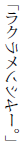

鉄塔の火星人
少年探偵団員で、中学一年の
ある午後のこと、有田君と長島君が、中村君の家に、遊びにきていました。
中村君の家は
中村君は星を見るのがすきで、その塔の部屋に、そうとう
三人はその部屋にのぼって、話をしていましたが、やがて話にもあきて、望遠鏡をのぞきはじめました。
ひるまですから、星は見えませんが、地上のけしきが、大きく見えるのです。ずっと向こうの家が、まるでとなりのように、近く見えますし、町を歩いている人なども、恐ろしいほど、すぐ目の前に見えるのです。
こんどは長島君の番で、望遠鏡の向きをかえながら、一心にのぞいていましたが、やがて、東京タワーの鉄塔が、レンズの中にはいってきました。
ここからは五百メートルも
長島君は、むきをかえて、タワーのてっぺんに、ねらいをさだめ、だんだん下の方へ、望遠鏡のさきを、さげていきました。
組み合わせた鉄骨が、びょうの一つ一つまで、はっきりと見えます。
だんだん、下にさがるほど、鉄骨の
「おい、どうしたんだ。なにが見えるんだ。」
中村君と有田君が、声をそろえて、たずねました。しかし、長島君は返事もしません。息をはずませて、くいいるように、望遠鏡に見いっています。
それもむりはありません。望遠鏡の中には、じつにふしぎな光景がうつっていたのです。
タワーの鉄骨に、なにか黄色っぽい、グニャグニャしたものが、まきついていたのです。はじめは、はだかの人間かと思いましたが、そうではありません。なんだか、えたいのしれない、へんてこなものです。しかも、そいつが、生き物であるしょうこには、ゆっくりゆっくり、動いているのです。
よく見ると、そいつの頭は、タコ
その頭の下にやっぱりタコの足のようなものが六本ついていて、その足で、鉄骨にまきついているのです。
「タコなら八本足のはずじゃないか。あいつは六本しかない。それに、全体の感じが、タコとはちがう。もっと、きみのわるいものだ。」
長島君は、心の中でそう思いました。だいいち、あんな大きなタコってあるでしょうか。そいつは人間ぐらいの大きさに見えるのです。
「あっ、そうだっ、火星人だっ。」
長島君は、声に出してさけびました。いま鉄塔にからみついているやつは、本の絵で見た火星人そっくりだったからです。
タコが陸上にあがって、東京タワーにのぼるなんてことは考えられませんが、火星人なら、宇宙をとんできて、ロケットからとびだして、鉄塔のてっぺんに、すがりつくということもないとはいえません。
そうして、あいつは、いま鉄塔をつたって、地上におりようとしているのでしょう。
「おい、なんだい、いま火星人と言ったんじゃないのかい。」
中村君が、たずねました。
「うん、そうだよ。東京タワーの鉄骨を、火星人とそっくりのやつが、はいおりているんだよ。」
「どれ、見せてごらん。」
こんどは中村君が望遠鏡にとりついて、のぞきこみました。
「あっ、ほんとだ。おい、あいつ火星人にちがいないよ。どうして地球へやってきたんだろう。あっ、展望台の屋根におりた。タコのようにはっている。おやっ、どっかへ見えなくなったよ。展望台の屋根から、もぐりこんだのかもしれない。」
あの怪物が大ぜいの見物のいる展望台に、あらわれたら、たちまち大さわぎになるはずです。ところが、そんなさわぎは、すこしも起こらなかったのです。いったい怪物は、どこにかくれてしまったのでしょう。
ふしぎなことに、この東京タワーの火星人を見たものは、広い東京に、三少年のほかには、だれもなかったのです。遠くからは、望遠鏡でなければ見えませんし、近くでは、大きな展望台がじゃまになって、その真上の怪物を見ることができなかったのです。そして、ちょうどそのとき、望遠鏡で東京タワーを見ていたのは、三少年だけだったのでしょう。
このできごとは、すこしもさわぎにならないで、すんでしまいました。三人は中村君のおとうさんに、それを知らせましたが、おとうさんは、あまりへんてこなことだものですから、きみたちは、まぼろしでも見たんだろうといって相手にしてくださらないのでした。
あくる日の新聞を気をつけて見ましたが、新聞にも、なにも出ておりません。火星人は展望台の屋根から、どこかへ、もぐりこんで、そのまま消えてしまったとしか考えられないのでした。
さて、そのあくる日の晩のことです。長島君は、やはり港区にある、自分のうちの勉強部屋で、宿題をやって、これから、ねようとしているときでした。
庭に面した窓ガラスを、パタパタとたたくような音が聞こえました。聞きなれない音なので、びっくりして、その方を見ますと、カーテンが半分開かれた、窓ガラスの向こうに、なんだか黄色っぽい、変なものが動いていました。
木の枝かしらと思いましたが、木の枝にしては、グニャグニャしています。なんとも、えたいのしれないものです。
身動きもできなくなって、じっと見つめていますと、その黄色いグニャグニャした棒のようなものは、ガラス窓のはしに、からみついて、それをあけようとしていることがわかりました。
長島君は、ゾーッとしました。そいつは、なにかへんてこな
ガラス戸には、かぎがかけてなかったので、すこしずつ、開きはじめました。
「どろぼうが、長い棒で窓を開いているのかもしれない。」
そう思うと、にわかに勇気が出てきました。
「こら、そこにいるのは、だれだっ。」
どなりつけて、いきなりカーテンをサッと開きました。
すると、そこにいたやつは？
みなさん、なんだと思います。火星人だったのです。あの東京タワーの鉄骨にからみついていたのと同じ、タコ入道のような、きみのわるい、火星人だったのです。
火星人のまんまるな目が、長島君をにらみつけました。そして、

と、あのとびだした口で、わけのわからないことを、言いました。英語でも、フランス語でもありません。
きっと火星語なのでしょう。そして、一本の足がニューッと窓からはいってきたかと思うと、一枚の紙きれを、部屋の中へ、ヒラヒラと、投げてよこしました。
しかし、長島君は、それを
火星人は、またわけのわからないことを言ったかと思うと、そのまま、窓ぎわをはなれて、庭の向こうへ、遠ざかっていきました。
庭の電灯で、その姿が、よく見えます。タコが、ぜんぶの足を、まっすぐにつっぱって、ノコノコ歩いていくかっこうです。なにしろ六本の足ですから、なかなか早いのです。やがて、
長島君は、そのときになって、はじめて声が出ました。
「たいへんだあ。火星人がきたあ……。」
そうさけんで、いきなり、みんなのいる茶の間の方へ、かけだして行くのでした。
それから、家じゅうが、大さわぎになり、一一〇番に電話をかけて、パトロール・カーにきてもらい、うちのまわりを、くまなく
さっき、窓から投げこんだ紙きれを調べてみますと、それにはこんなことが書いてありました。
月世界旅行をしましょう
それにしても、これは日本語で、しかも活字で印刷してあるのです。火星人はひどく進歩しているといいますから、火星にいて、ちゃんと、日本語を研究していたのかもしれませんが、それが活字で印刷してあるのは、どうも、がてんがいきません。
さかさまロボット
警察がやってきたので、たちまち、このことが新聞記者の耳にはいり、その夜おそく、長島君のうちは、新聞記者攻めにあいました。火星人を見たのは長島君だけですから、新聞記者にとりかこまれて、うるさくたずねられたのです。
そして、あくる日の新聞には、このふしぎなできごとが、でかでかとのりました。日本じゅうの人が、それをよみました。そして、そのうわさで、もちきりなのです。
火星人は長島君の家にあらわれたばかりではありません。それからというもの、毎日のように、東京の方ぼうに、姿をあらわし、そのたびに、あの、「月世界旅行をしましょう」という紙きれを、おいていくのです。
ところが、それからしばらくすると、火星人とはべつに、もう一つのぶきみな事件が起こりました。そして、その事件にはじめて出くわしたのが、やっぱり少年探偵団の三少年のひとり、有田君でした。
有田君も港区にすんでいたのですが、ある夕方、ひとりで、さみしいやしき町を歩いていました。ながいコンクリート
ふと気がつくと、百メートルも向こうから、まっ黒なからだの、へんなやつが、近づいてくるのです。
だんだん近よるにしたがって、そいつの姿が、はっきりしてきました。
ロボットのようなやつです。しかし、こんなへんてこなロボットは、まだ、いちども見たことがありません。
顔は、まるいプラスチックで、人間の三倍もあり、すきとおって見えるのです。その中には、へんてこな機械のようなものばかりで、目も鼻も口もありません。つまり、顔のない機械人間なのです。
目はないけれども、二つの赤い光が、チカッ、チカッと、ついたり、きえたりしています。それが、ちょうど目のように見えるのです。お化けのまっ赤な目です。
そのほか、プラスチックの顔の中には、ゴチャゴチャと、機械がならんでいて、それがみな、いそがしそうに動いています。うすい金属でできた羽のようなものが、目にもとまらぬ
有田少年は、さっきから、ポストのかげにかくれていました。そこから、相手に気づかれないように、そっと、のぞいていたのです。
怪物は、もう十メートルほどに、近よってきました。そして、なにか、ものを言っています。はじめは、ガアガアいう音ばかりで、よく聞きとれませんでしたが、やがて、はっきりした声になりました。
「そこに、子どもがかくれているな。ポストのうしろだ。かくれたって、だめだよ。おれには、どんな厚いかべだって、すきとおって見えるんだからな。ワハハハハ……。」
ロボットは、そんなことを言って笑いだしました。中に人間がはいっているのかもしれません。
有田君は、びっくりして、いきなり逃げだしましたが、五―六歩走ったかとおもうと、動けなくなってしまいました。
なにか目に見えないものに、ひっぱられているような感じで、逃げようとすればするほど、ぎゃくに、ロボットの方へ、ひっぱられていくのです。
「どうだ。おれは目に見えないひもで、きみをひっぱっているのだ。そのひもで、きみをしばってしまうことだってできるんだよ。」
いかにも、目に見えないひもで、ひっぱられている感じでした。
有田君は、そのひもからのがれるために、めちゃくちゃに手をふって、あばれまわりましたが、どうしてもだめです。一歩も逃げだすことはできないのです。
「そらっ、ひもが離れた。かけだせ。そして、みんなを呼んでこい。おれは、相手が多ければ多いほど、ありがたいのだ。」
ロボットが、あたりにひびきわたるような声で、どなりました。
たしかに、目に見えぬひもがとかれたのでしょう。有田君は自由にかけだすことができました。
有田君は、商店のならんでいる大通りへかけつけて、赤電話で一一〇番を呼びだし、ロボットがあらわれたことを知らせました。
それから、三分もたつと、三台のパトロール・カーがサイレンを鳴らしながら、ロボットのいるところへ、かけつけてきました。
そのころには、近所の人たちも、大ぜい集まってきて、黒山の人だかりです。
ロボットは、警官たちや近所の人たちにとりかこまれて、もとの場所につっ立っているのです。
警官たちは、ピストルを手にしていました。なにしろ相手は、目に見えぬひもをくりだして、こっちをしばるようなやつです。武器をもたないで、手向かうことはできません。
「ワハハハハ……、大ぜい集まってきたな。さあ、おれをつかまえてみろ。勇気があったら、やってこい。」
怪物が人をばかにしたように、わめくのです。
三人の警官が、体あたりで、怪物にぶっつかっていきましたが、たちまち、はねとばされてしまいました。
「きさま、うつぞっ、ピストルがこわくないのか。」
「ワハハハハ……、ピストルなんか、こわくてどうする。うつなら、うってみろ。」
バーンと、ピストルが発射されました。たまは、たしかに怪物に命中したのです。しかし、ロボットは平気です。やっぱり大きな声で笑っているのです。
「よし、たまのあるだけ、ぶっぱなせっ！」
バン、バン、バン、バーン……。
五丁のピストルが、火をはきました。
しかし、こんどは一発も、当たりません。
その瞬間に、ロボットが、パッと、空中たかく、とびあがったからです。
地面には大きな鉄の靴が残っていました。ロボットは、重い靴をぬいで、とびあがったのです。見物たちのあいだに、ワーッという、ざわめきが起こりました。
ロボットは、そのまま、グングン空へのぼっていくではありませんか。
こいつもやっぱり、どこかの星からやってきた宇宙人なのでしょうか。地球の人間とはちがって自由自在に、空がとべるのでしょうか。
ヘリコプターのように、プロペラがついているのかと思いましたが、そんなものはついていないのです。ただ自分の力だけで、フワフワと空中へのぼっていくのです。
また、人びとの口から、ワーッという声がひびきました。
おお、ごらんなさい。怪ロボットは、空中で、クルッと、ひっくりかえって、頭が下に、足が上になりました。そして、そのさかさまの形で、どこまでも、空たかくのぼっていくのです。
だんだん、小さくなっていきます。子どもぐらいの大きさになり、赤ちゃんぐらいの大きさになり、おもちゃの人形ぐらいの大きさになり、そして、とうとう、雲の中へかくれて、見えなくなってしまいました。
「おやっ、これはなんだろう。」
ひとりの警官が、ロボットの靴のそばにおちていた一枚の紙きれを拾いあげました。
その紙きれには、
月世界旅行をしましょう
火星人と怪ロボットは、いったい、なんのために、東京にあらわれたのでしょう。
そして、「月世界旅行をしましょう」とは、なにを意味するのでしょう。
屋上の怪人
タコ入道のような火星人と、電気ロボットが東京にあらわれたことは、新聞の大きな記事によって、日本じゅうに、知れわたりました。
中村、有田、長島の三少年を驚かしたのちにも、この二つの恐ろしい怪物は、東京の方ぼうにあらわれました。そして、その怪物がきえうせたあとには、いつでも、「月世界旅行をしましょう」とか、「月世界へおいでなさい」とかいう、みょうなことを書いた紙きれが落ちているのでした。
あるときは、銀座のビルの電光ニュースに、とつぜん「月世界へいきましょう」という文句が流れて、大ぜいの人びとを、びっくりさせたこともあります。
また、あるときは、銀座通りの広告塔のラウド・スピーカーから、やっぱり、「月世界へおいでなさい」という声が、くりかえしてさけばれ、人びとをふしぎがらせたこともあります。
何者かが、東京じゅうの人を、月世界へさそっているようです。いったい、だれが、なんのために、そんなことをやっているのでしょう。
さて、そんなさわぎの起こっている、ある日のこと、
「きみは小林君だね。ぼくはデンジン
「え、どなたですか。」
「デンジンＭ。」
「デンジンって？」
「電気の電と、人物の人だ。電気の人間という意味だ。電人Ｍというのが、ぼくの名だ。」
小林君はだれかが、からかっているのかと思いました。
「その電人Ｍが、ぼくになんの用があるのですか。」
「きみに会いたいのだ。」
「どんな、ご用ですか。」
「電話では言えない。会ってから話す。きょう午後四時きっかりに、
Ｍビルというのは、一階に銀行があって、二階から六階まで、いろいろな会社の事務所がある、大きなビルでした。小林君は、そのビルをよく知っていました。
「そこで、きみにおもしろいものを見せてあげる。これは電人Ｍの挑戦だよ。もし、きみがＭビルへこなければ、きみは、ぼくに負けたことになるのだ。」
挑戦と言われては、相手が何者であろうとも、あとへひくことはできません。小林君は四時にＭビルの屋上へいくことを約束して、電話を切りました。
それから、明智先生と相談して、ともかくＭビルへ行ってみることにしました。いつもなら電車に乗るのですが、きょうは自家用車を、自分で運転していくのです。
「仮面の恐怖王」の事件で、小林君とポケット小僧は、山の中にうずまっていた、ばくだいな
それから、一台の自動車を買い入れました。「アケチ一号」という名前です。それは探偵用の自動車で、
小林君は、まえから自動車の運転ができたのですが、このアケチ一号を買ってから、その車でじゅうぶん、練習しましたから、すこしもあぶなげがありません。小林君はアケチ一号を運転して、日本橋のＭビルの前に車をとめておいて、エレベーターで屋上にのぼりました。まだ四時には二―三分あります。
広い屋上には、人かげもありません。昼ごはんのあとは、会社の人でにぎわうのですが、いまはもう夕方に近いので、だれも屋上にあがっている人はないのです。屋上には、両方のはしに、出入口がついています。小さな小屋のようなもので、そこにエレベーターと階段があるのです。
腕時計が、ちょうど、四時をさしたとき、そのいっぽうの出入口のドアが開いて、変なものが出てきました。
大きなロボットです。からだは鉄でできているようです。頭は、すきとおったプラスチックで、その中に機械がいっぱいならんでいます。二つの赤い光が、チカッ、チカッと、ついたり消えたりしていて、それが赤い目のように見えるのです。
「あっ、あいつが、電人Ｍだなっ。」
小林君は、とっさに、そう考えました。そして、じっと、待っていますと、ロボットは、機械のような歩き方で、こちらへ進んできました。
「おお、小林君、よくきたね。いまに、おもしろいことが、はじまるから、見ていたまえ。」
ロボットが、へんなしわがれ声で、言いました。
小林君は、こいつが新聞に出ていたあのロボットだなと、思いました。風船のように、空へとんでいった、あのロボットと同じやつだろうと、考えたのです。
ロボットは、屋上の手すりのところへいって、はるか下の道路を見おろしました。
そこには、都電が通っています。たくさんの自動車が、走っています。それがマッチの箱のように小さく見えるのです。
ロボットは、右手に、厚ぼったい紙のたばを持っていましたが、その右手を、たかくあげたかとおもうと、紙たばを、パッと、下の道路にむかって、投げおろしました。
紙が一枚一枚はなれて、ひろがって、まるで雪のように、チラチラと降っていきます。美しいながめです。下の道路を歩いていた人たちが、それに気づいて、空を見あげています。両手をひろげて、待ちかまえている人もあります。
白い紙きれは、人びとの頭の上をかすめて、
月世界へおいでなさい
この紙を投げたのは、だれだろうと、みんながＭビルの屋上を見あげました。
ロボットは平気で、手すりによりかかって、下をのぞいています。
地面からワーッという声が、聞こえてきました。みんなが、恐ろしいロボットを見て、さけんでいるのです。
やがて、向こうから、ふたりの警官が、かけつけてきました。そして、Ｍビルの入口から、中へはいってくるのが見えました。それでも、ロボットは、もとの姿勢のまま、動くようすはありません。
いまに、あの警官が屋上にあがってきたら、どうするだろうと、かえって小林君のほうがしんぱいになるほどでした。
それから、いきづまるような数分間がすぎました。
すると、はたしてむこうの出入口から、ふたりの警官と、おおぜいの背広の人たちがかけだしてきました。
「あっ、あそこにいる。」
だれかが、大きな声でさけびました。
そのときロボットは、やっとてすりをはなれて、人びとのほうを見ました。
「小林君、いいかい。これから、おもしろいことがおこるんだ。きみのちえをはたらかせるときだよ。」
そういったかとおもうと、ロボットは、やにわにむきをかえて、べつの出入口のほうへかけだしたのです。機械のようなへんなはしりかたですが、その早いこと。
小林君もあとをおって、かけだしました。小林君はむろん、警官のみかたです。
警官たちは、ロボットがにげだすのを見て、いっそう足を早めたので、だんだんへだたりがちぢまってきます。
ロボットは階段をかけおりて、六階におり、そこの廊下をはしっていって、ひとつの部屋にとびこむと、中からかぎをかけてしまいました。小林少年はドアのまえに立ったまま、みんなのくるのをまっているほかはないのでした。
大月球
警官たちがかけつけてきました。
「ここです。この部屋にはいってかぎをかけました。」
小林君がそういいますと、警官のひとりが、かぎあなをのぞきましたが、かぎがさしたままになっていて、なにも見えません。
そのとき部屋の中で、なにかさけぶ声がきこえました。どうも、ふたりの声のようです。するとこの部屋には人がいて、ロボットとあらそっているのでしょうか。
「たすけてくれえ……。」
その人は、ロボットにひどいめにあわされているようです。
「よし、このドアをやぶるんだっ。」
警官はそうさけんで、ドシン、ドシンと、からだをドアにぶっつけはじめました。しかし、ドアは、なかなかこわれません。なんども、なんども体あたりをしているうちに、やっとドアのちょうつがいがはずれたので、人びとはドアをおしたおして、中へとびこんでいきました。
ひとりの背広の男が、開いた窓から、そとをのぞいています。
「どうしたのです。ロボットはどこへいったのです。」
警官がたずねますと、その男はふりむいて、
「この窓から、中庭へとびおりました。ふしぎです。やつは、たおれもしないでそのまま、あの入口から一階へはいっていきました。」
空へ風船のようにとびあがるほどのロボットですから、六階からとびおりるくらいへいきなのでしょう。
それをきくと、ひとりの警官がさけびました。
「よし、ぼくはエレベーターでおっかける。きみはこの電話で、パトカーの応援をたのんでくれ。」
そしてへやをとびだすと、エレベーターのほうへはしりました。おおぜいのＭビルの会社の人たちも、おなじようにエレベーターへいそぎました。
あとにのこった警官は、電話をかけおわると、これもエレベーターのほうへ、かけだしていきます。
あたりの部屋からあつまった人たちも、それぞれひきあげてしまい、長い廊下に、人かげが見えなくなりました。
すると、やぶれたドアからさっきの男が、大きな四角のズックのかばんをさげて、出てきたのです。あたりを見まわして、階段のほうへいそいでいきます。
小林少年は、廊下のまがりかどに身をかくして、男がでてくるのをまっていました。
この男があやしいとかんがえたのです。警官がドアをやぶっているあいだに、ロボットの変装をぬいで、ふつうの人間にもどっていたのかもしれないからです。
いま、その男が大きなかばんをもって出てきたのを見ると、もう、それにちがいないとおもいました。ロボットのからだは、うすい金属でこしらえてあって、それがこまかくおりたためるようにできているとすれば、あのかばんの中におさまってしまうでしょう。プラスチックの頭だって、いくつにも、われるようになっているのかもしれません。
それに、ロボットの背の高さは二メートルにちかいのですから、プラスチックの頭の下に、人間がはいっていることもできるわけです。
小林君は、そのあやしい男のあとを、ソッと
男は、エレベーターでは、だれがのっているのかわからないので、あぶないとおもったのでしょう、階段をトコトコおりていきます。小林君にとっては、そのほうがつごうがいいのです。いちども見うしなわずに、Ｍビルのそとまで尾行することができました。
男は、そこにならんでいる一台の自動車にのりこみました。運転手はいないようですから、じぶんで運転するのでしょう。
それを見とどけると小林君も、じぶんの車のほうへはしっていって、のりこみました。
そして、自動車の追跡がはじまったのです。
男の車は
広い畑の中の道をしばらくいくと、どこかの会社の建築用地なのでしょう、長い板べいのつづいているところにでました。
男の車は、その板べいのきわでとまり、男はへいについている戸をひらいて、中へはいっていったようです。
小林君も、五十メートルほどへだたったところで車をおりると、ソッと、男の車のほうへちかづいていきました。
男の車は、ヘッドライトをけしてしまいましたし、そのへんには電灯もないので、あたりはまっくらでしたが、星空のうすあかりで、長いへいがぼんやりと見えています。
男のはいったへいの戸のそとまでいって、じっと耳をすましていますと、スーッと、音もなく戸がひらき、そこに、男がつったっていました。
小林君はびっくりして、身をかくそうとしましたが、もうまにあいません。
「ハハハ……、まっていたんだよ。きみが車で尾行していることも、ちゃんとしっていたのさ。きみは、やっぱりうまくちえをはたらかせたね。おまわりさんより頭がいいぞ。」
もう、こうなっては、しかたがありません。小林君もどきょうをすえました。
「じゃあ、きみがロボットにばけていたんだね。」
「そうだよ、ロボットの衣しょうはこまかくおりたたんで、このかばんの中にいれてある。まさか、あんなに早くロボットが人間にかわるなんて、おもいもよらないものだから、おまわりさんたちも、すっかりだまされてしまったのさ。それを、きみだけが見やぶったのは、さすがに明智探偵の弟子だよ。」
こんなやつにほめられても、いっこうにうれしくありません。
「じゃあ、きみが、さっき電話をかけてきた電人Ｍなのかい。」
「いや、そうじゃない、電人Ｍというのは、おれたちのおかしらだ、おれはその部下なのさ、電人Ｍがどんなにおそろしいおかただか、いまに、きみにもわかるときがくるだろうよ。」
「それにしても、きみは、ぼくがつけてくるのをしりながら、なぜにげなかったの。ぼくをここへおびきよせたのは、なんのためなんだい。」
「それは、おもしろいものを見せてやろうとおもったからさ。つまり、宣伝のためだよ。」
「えっ、宣伝のためだって。」
「そうさ、宣伝さ。そのために、おれたちは電光ニュースや、広告塔にいたずらをしたり、印刷した紙をばらまいたり、火星人のような怪物をあらわしたり、ロボットを空へとばしたりしているんだ。」
「ロボットといえば、きょうのきみのロボットと、あの空へとんだロボットとは、つくりかたがちがうんだね。」
「そうだよ。空へとんだやつは、ビニールの風船だよ。ロボットのような形にして、色をぬってごまかしてあるのさ。水素がいっぱいつめてあるので、鉄の靴さえぬげば、とびあがるようになっているのだ。そのうえ、胸のところは、
「じゃあ、あの中に人間がはいっていたの。」
「いや、人間なんかはいってやしない。はいっていたら、あんなにとべないよ。ただの風船さ。」
「それじゃ、どうして、ものを言ったんだい。」
「ロボットの胸に、無線電話のラウド・スピーカーが仕掛てあって、遠くから、おれたちの仲間がしゃべっていたんだよ。あそこのコンクリート塀の中からね。ロボットを歩かせるのも、重い靴をぬがせるのも、みんな無線操縦でやっていたのさ。」
「タコのような火星人は？」
「中に人間がはいっていたんだよ。あれもビニールでこしらえたものだが、じつにうまくできている。絵にかいた火星人そっくりだからね。六本の足のうち四本は人間の足と手がはいっているが、あとの二本は、ただブラン、ブランと、さがっているだけなのさ。」
小林君はこんなに、なにもかも、打ち明けてしまって、いったい、どうする気だろうと、
「で、そんなことをやって、なにを宣伝しようとしたんだい。」
「わかってるじゃないか。月世界旅行へさそったのさ。」
「えっ、月世界旅行だって？」
「ハハハハ……、きみは、まだ気がつかないのかい。ほら、あそこを見てごらん。」
男はそう言って、塀の中の
「ボーッと見えるだろう。でっかいものが。」
そう言われると、星空の下に、大きな、まるい山のようなものが、向こうに、そびえています。
じっと見つめていますと、だんだん、その形がわかってきました。
それは、
よく見ると、その表面に、たくさんのでこぼこがあります。ああ、わかった。望遠鏡で見た月の表面とそっくりです。さしわたし五十メートルの月世界が、闇の中にそびえていたのです。
「わかったかね。つまり地上の月世界さ。あの月世界にむかって、ロケットで旅行をするのだ。ロケットの方は、まだここに持ってきてないが、見物人はそのロケットにはいるのさ。そして、月世界へとぶんだよ。」
とほうもない見世物です。
それにふさわしく、とほうもない宣伝をやったものです。
ああ、この月世界旅行の見世物から、いったい、どんなことが、起こってくるのでしょうか。
ロケットにのって
小林少年が、へんな男に、練馬区の畑の中にそびえている人工月世界を見せられてから、一週間ほどしますと、東京のおもな新聞に、一ページの大広告が出ました。
それには、『東京の一角に、大月世界が出現しました。みなさんロケットにのって、月世界を探検してください。』という文句が、大きな写真いりで、でかでかと印刷してあったのです。
東京じゅうに、どっと笑い声がおこりました。このあいだからの火星人や電気ロボットは、みんな、この人工月世界の宣伝にすぎなかったことがわかったからです。なんという、めちゃくちゃな宣伝をしたものだろうと、みんなあきれかえってしまいました。
この月世界を作った会社の重役は、警視庁によびつけられて、ひどくしかられましたが、そのことがまた宣伝になって、人工月世界旅行は、おそろしくはんじょうしました。毎日、毎日、何千人という見物がおしかけたのです。おおくは少年少女、または子どもづれのおとなたちでした。
一万平方メートルもある敷地の一方のすみに、直径五十メートルもある月世界が、巨大なおわんをふせたようにそびえています。月球の半分だけが、地上に、山のようにもりあがっているのです。
その敷地の三方のすみに、月世界行きのロケットの乗り場があります。
見物たちは、そこで宇宙服を着せられ、まるい、すきとおった宇宙帽をかぶせられます。そして、高い階段をのぼって、コンクリートの台の上から、空中にロープでさがっているロケット型のケーブル・カーにのりこむのです。一度に十五人しか乗れませんが、それが三か所にあるのですから、四十五人ずつ運べるわけです。
ロケット型のケーブル・カーはロープをつたって、三百メートルほどの空中を、恐ろしい速さで月世界につきすすみます。
そして、月世界のそばまでくると、ロケットは、グルッとまわって、後部の方から、着陸するのです。
見物たちは、後部についている出入口から、ひとりずつ、
それから、まるい月の表面を、山のぼりのように、よじのぼるのです。月面は宇宙服の見物たちでいっぱいになります。でこぼこの表面ですから、足がかりは、いくらもあるので、すべり落ちることはありません。そして、頂上までのぼりつき、四方をながめた景色は、じつにすばらしい。まるでほんとうの月世界にきたような気持です。
「あっ、あそこにも月がある。」
「あれは地球だよ。月世界から見た地球だよ。」
見物の少年たちが、口ぐちにさけぶのでした。
地球から見る月の何倍もある、大きな地球が空中にうかんでいます。それは、地球の形をした気球なのです。地上の機械にロープでつないであって、それがゆっくり動いているのです。
それをながめていますと、見物たちは、ほんとうに、地球を遠く遠くはなれてきたような気持になるのでした。
「あっ、あそこに日本が見える。あれだよ。あの小さい島だよ。」
「東京はどこだろう。」
「東京なんて、ここから見えるもんか。」
少年たちは、がやがやと、そんなことをしゃべりあうのでした。
月世界の見物は二十分とさだめられ、その時間がすぎると、月球のうらがわにある階段をおりなければなりません。その高い階段をおりたところに、月球の内部への入口がひらいています。
そこからはいっていきますと、月のうちがわがプラネタリウムになっていて、大きな丸てんじょうに、無数の星がかがやいているのです。その下には、見物席のベンチが、まるく、グルッとならんでいるのです。
このプラネタリウムは、天体の全景をうつすばかりでなく、その一部だけを大うつしにすることもできるようになっていました。
そこへ地球と月が大きくうつって、地球から人工衛星がうちあげられるところや、月世界へロケットのとんでいくところが、手にとるように見えるのです。
「みなさんは、さっき、こうして月世界へおとびになったのです。ほら、ロケットが月につきました。みなさんは、ロケットからでて、月面の探検をなさるのです。」
ラウド・スピーカーから、説明者の声がひびいてきます。見物はそれをきいて、さっきのじぶんたちのロケット旅行をおもいだすのです。
それがきえると、こんどは、もういっそう大うつしになって、人工衛星の部分が、いくどにもうちあげられ、それをくみたてていく光景があらわれます。宇宙服をきた小さな人間が、空中をおよぐように動きまわって、くみたての仕事をしているところまで、よく見えるのです。
そのほか、いろいろな天体のありさまがうつしだされたあとで、見物たちは、プラネタリウムをあとにして、うら門のところで宇宙服をぬがされて、会場を出るのです。
このふしぎなみせものは、とっぴな宣伝のききめもあって、すごい人気でした。いなかから、わざわざ見物にくる人もあり、東京タワーとならんで、東京の名物のようになり、月世界行きのバスもできるというさわぎでした。
そして、なにごともなく三か月ほどが過ぎ去りましたが、そのころになって、ぶきみなことが、起こりはじめたのです。
大発明
豊島区の奥のさびしいやしき町に、近所の家から離れて、二階建ての西洋館がたっていました。これは化学者
遠藤博士は、もと大学教授をやっていたこともありますが、もう十年もまえ、まだ若いころに教授をやめて、財産のあるにまかせて、なにか大きな研究にとりかかり、それをずっとつづけているのです。
博士の家には、おくさんの
家族のほかに、研究助手の
博士がなにを研究しているかは、家族のだれも知りません。助手の木村青年さえ、はっきりしたことはわからないのです。
遠藤さんの家には、広い研究室があって、その中には、いろいろな化学実験の道具や薬品が、いっぱいならんでいるのですが、この実験室はがんじょうな鉄筋コンクリート造りで、一つしかない入口には、がんじょうなドアがついており、窓にはぜんぶ鉄格子がはめてあるうえ、そとに鉄のとびらがついていて、まるで巨大な金庫のような部屋でした。
博士は一日じゅうその研究室にとじこもって、なにかの研究にかかりきっています。おくさんの美代子さんは、心配して、ときどき、「なにを研究なさっているのですか。」とたずねてみるのですが、博士は、
「世界をひっくりかえすような大発明だよ。しかし、それがなんであるかは、わしのほかは、だれも知らない。木村君もしらない。うっかりしゃべったら、たいへんなことになるのだ。これは
と言うばかりでした。
その大発明が、いよいよできあがったらしく、このごろは、博士の顔がいきいきしてきました。さもうれしそうに、ひとりでニヤニヤ笑っていることもあります。
研究室の外の小屋には、ウサギがたくさん
うちの人たちは、それをきみわるがりました。木村助手も、あまりいい気持はしません。それらのウサギたちが、いつ、どうして死んでしまうのか、すこしもわからなかったのです。
しばらくすると、博士のうちに、いろいろな人が、たずねてくるようになりました。みな、りっぱな服をきた紳士ばかりです。その中には、どこの国の人かわかりませんが、外国人もおりました。そして、それらの紳士たちは、博士の応接間で、なにかヒソヒソと、ながい時間、話をして帰っていくのです。
あるとき、木村助手が、おくさんの美代子さんにこんなことを言いました。
「発明がいよいよできたんですよ。先生が、そうおっしゃいました。まだ秘密ですが、どこから、感づいたのか、このごろ、たずねてくる人たちは、先生にその発明のことを聞くためにやってくるのですよ。政府のえらい人もきます。外国人もきます。なんだか恐ろしくなってきました。先生は世界をひっくりかえすような大発明をされたらしいのですよ。」
うちの人たちは、心配でたまりません。博士がいろいろな人に、つきまとわれて、そのうちに、恐ろしいことが起こるのではないかと思われたからです。
よくやってくる、ある外国人などは、目がへんにするどくて、世界をまたにかけているスパイというような感じをうけました。きみがわるくてしかたがありません。
ところが、そうしているうちに、もっときみのわるいことが起こったのです。
ある晩のこと、使いにいった木村助手が、顔色をかえて、研究室へとびこんできました。
「先生、塀の外に、へんなやつがウロウロしてますよ。先生の発明をねらっているのじゃないでしょうか。」
「へんなやつって、どんなやつだ。」
「恐ろしくでっかいやつです。
「まっ黒だって？」
「ええ、からだじゅう、まっ黒です。頭はぼくの三倍ほどもあって、まっ赤な目が光っているのです。」
「きみはどうかしたんだよ。そんな化け物が、町を歩いているはずはない。まぼろしでも見たんだ。」
博士は、笑ってとりあいませんでしたが、やがてそれが、けっして、まぼろしなんかでないことが、わかってきたのです。
その晩、博士の子どもの中学生の治郎君は、自分の部屋で勉強していましたが、宿題が終わったので、ひと休みして、外の空気を吸うために、窓を開きました。
窓の外は、まっくらな庭です。向こうに木の
ふと気がつくと、その木の茂みの間に、赤い光が、チラチラと動いているではありませんか。
「おや、なんだろう。ヘビの目が光っているのかしら。いや、あんな大きな目のヘビがいるはずはない。それに、動物の目にしては赤すぎる。といって懐中電灯でもない、へんだなあ……。」
治郎君は勇気のある少年でしたから、外へ行って、たしかめてみる気になりました。
懐中電灯を持って、部屋を出ると、
チカ、チカ、チカ……、その赤い光が、ついたり、きえたりしています。
「だれだっ、そこにいるのは？」
治郎君は、そうさけんで、いきなり懐中電灯をつけて、そのへんを、照らしました。
電人Ｍあらわる
すると、木の茂みから、ヌーッと立ちあがったやつがあります。
治郎君はそれを見ると、ギョッとして、動けなくなってしまいました。
そいつは、おとなの一倍半もある、まっくろな、でっかいやつでした。からだは、ロボットのように、鉄かなんかでできていて、顔はガラスのようにすきとおって、恐ろしく大きく、目のところに二つの赤い光が、チカッ、チカッと、かがやいています。鼻も口もなくて、まるいガラスのようなものの中に、小さい機械が、ウジャウジャかたまっているのです。
人間でいえば、口のへんにあたる、こまかい機械が、ピアノのキーのように、カタカタと、動きました。
「エヘヘヘヘヘ……。」
怪物が、みょうな声で笑ったのです。
治郎君は、あまりの恐ろしさに、死にものぐるいで、かけだしました。そして、家の中にころがりこむと、
「おとうさん、たいへんです。庭に、恐ろしいやつがいる。」
と、さけびました。
「なんだ、なんだ。」
おとうさんの遠藤博士が、そこへ、かけつけてきました。そして、庭にへんなやつがいると聞くと、すぐに、懐中電灯をもって、とびだしていきましたが、もうそのときには、どこを捜しても、怪物の姿は見つかりませんでした。
遠藤博士も、二度もこんなことがあっては、もう、笑っているわけにはいきません。すぐに警察に電話をかけて、警官に調べてもらうように、たのみました。
すると、まもなく、近くの警察署から三人の警官がやってきて、博士邸の内外を念入りに調べてくれましたが、なんの
それがすんでから、博士の応接間に集まった三人の警官のひとりが、へんな顔をして、こんなことを、言いだしたではありませんか。
「先生、その怪物は電気ロボットに、似ていますねえ。」
「え、ロボットというと。」
「ほら、月世界旅行の見世物が、前宣伝に使ったやつですよ。タコのような火星人と、ものすごい電気ロボットが、方ぼうにあらわれて、世間をさわがせたことがあるでしょう。」
「ああ、そうだ。治郎の見た怪物は、新聞にスケッチの出ていた、あの電気ロボットとそっくりですね。だが、その電気ロボットが、どうして、わたしの家へやってくるのでしょう。」
博士は不審らしく、まゆをしかめました。
「あの電気ロボットならば、中に人間がはいっている、つくりものです。怪物でもなんでもありません。広告のチンドン屋と同じようなものですからね。しかし、そいつが、どうして、おたくの庭まで、はいってきたか、また、塀のそとを、うろついていたか。どうもふしぎですね。」
そこで、三人の警官は、
「もしまた、あいつがあらわれたら、すぐかけつけますから、電話をください。」
といいのこして、そのまま、ひきあげていきました。
ところが、そのあくる日の夕方のことです。またしても、恐ろしいことが起こりました。
その夕方、治郎君の妹のやすえちゃんと、おかあさんの美代子さんが、いっしょに、二階への階段の下の、うすぐらい、広い廊下を歩いていたときです。
階段の上から、だれかが、おりてきました。
いまごろ、だれが二階にいたのかしらと思って、ヒョイと見あげますと……、そこに、恐ろしい姿があったのです。
やすえちゃんは、「キャーッ。」といって、廊下にうずくまってしまいました。おかあさんも、やすえちゃんをかばうように、その上に重なって、いまにも気が遠くなりそうでした。
それはあの電気ロボットの怪物でした。いや、そればかりでなく、もっときみのわるいものが、ロボットの首にまきついていました。
それは、あのタコのような火星人です。六本の長い足を、電気ロボットの首にまきつけ、でっかい、まるい頭を、ロボットのプラスチックの頭の上にのせて、大きな目で、うすきみわるく、こちらをにらんでいるのです。
その、なんともいえない、へんてこな姿で、ロボットは、一段一段、階段をおりてきます。
やすえちゃんと、おかあさんは、もとのところに、うずくまったままで、どうすることもできません。いまにも、ロボットが、近づいて、おそろしいめに、あわせるのではないでしょうか。
そのとき、バタバタと人の走ってくる足音がしました。治郎君です。さっきのやすえちゃんのさけび声を聞いて、かけつけてきたのです。
廊下のかどを曲がると、すぐに、怪物の姿が目にうつりました。
「おとうさん、たいへんです。はやく来てください。」
治郎君がせいいっぱいの声で、さけびました。
それを聞くと、怪物は、まだ三段ほど残っていた階段を、パッととびおりて、治郎君のいるのとは反対の方へ、逃げていきます。
そこへ、治郎君のうしろから、おとうさんの博士がかけつけてきました。そして、ロボットがあらわれたと聞くと、すぐに、そこの部屋にとびこんで、警察へ電話をかけるのでした。
「おとうさん、あいつは研究室の方へ、逃げました。ですから、行きどまりです。研究室のほかには木村さんの部屋があるきりです。木村さんの部屋にも、窓に鉄格子がはめてあるから、外へ逃げることはできません。そこで見はっていれば、ふくろのネズミですよ。」
博士が電話をかけて出てくるのを待って、治郎君が言いました。
「うん、そうだ。警官がくるまで、ふたりで、ここで見はっていよう。わしは、ピストルを持ってきたから、もし、もどってきたら、これで、おどかせばいい。」
遠藤博士は、届けずみのピストルを持っていたのです。
ふたりが、そこで見はっていますと、しばらくして、向こうから、こちらへやってくる足音がしました。
さては怪物がもどってきたのかと、ピストルを持って、身がまえましたが、どうも怪物ではなさそうです。なんだかよわよわしい、たよりない足音です。
あらわれたのは、助手の木村青年でした。ねぼけたような顔をして、目をこすっています。
「おお、木村君、あいつはどうした。あのロボットはどうした。」
「え、ロボットですって。」
「じゃあ、きみは、あいつに出あわなかったんだな。それじゃ、まだ研究室にいるかもしれない。行ってみよう。」
博士はさきにたって、研究室に急ぎ、パッと、ドアを開きましたが、中はからっぽです。
「まさか、きみの部屋じゃあるまいな。」
そういって、木村助手の部屋も調べましたが、そこも、からっぽでした。
ああ、怪物は、またしても、どこにも逃げ道のない、行きどまりの廊下から、きえうせてしまったのです。
Ｍの一字
いったい、あの大きなからだの電人Ｍが、どこから、逃げだしたのでしょう。研究室のかべにも床にも天井にも、秘密の通路なんか、まったくないのです。あいつは、
そんなことができるはずはありません。これには、きっと、なにか恐ろしい秘密があるのです。
その事件のあくる日の晩のことです。またしても、恐ろしいことが起こりました。
博士の助手の木村青年は、用事があって、外に出ましたが、その帰り道で、博士邸から五百メートルほどの、さびしい町を歩いていますと、向こうの町かどに、赤いポストが立っていて、そのうしろに、なんだか、みょうなものが、うずくまっていました。
「おやっ、なんだろう？ 人間じゃないし、動物でもない。荷物かしら。それにしても、あんなまっ黒な荷物なんて、変だなあ。」
そう思いながら、なにげなく近づいていきますと、その黒いものが、ヌーッと、姿をあらわしました。
木村助手は、棒立ちになってしまいました。
それは電人Ｍだったのです。この人通りのない町で、木村君を待伏せしていたのです。
木村君は、いきなり、逃げだそうとしましたが、あの黒いロボットは、恐ろしい速さで、木村君にとびかかって、鉄の腕で、うしろから、だきしめてしまいました。
「助けてくれえ……。」
木村君は、ありったけの声で、さけびましたが、そのへんは、高いコンクリート塀のつづいた、庭のひろい大きな家ばかりなので、声が聞こえなかったのか、だれも助けにきてくれるものはありません。
電人Ｍは木村君を、横抱きにして、トコトコ歩いていきます。
すぐそばに、神社の森がありました。電人Ｍは、その森の中にはいっていって、大きな木の根もとへ木村君をおろしました。
「ひどい目には、あわさない。安心しなさい。」
ロボットの口のへんの、ピアノのキーのような、たくさんの機械が、カチカチと動いて、そんな声が出てきました。人間の声ではなくて、機械の声です。
「おまえは、遠藤博士の発明の秘密を知っているだろう。」
電人Ｍが、また言いました。
「知らない。博士は、助手のぼくにも、その秘密を、打ち明けられないのだ。」
「ほんとうか。」
「ほんとうだ。ぼくは、助手といっても、雑用をしているだけで、かんじんなことは、みんな先生が、自分でなさるのだ。」
「それなら盗みだせ。博士の発明を書いた化学式を盗みだして、おれにくれたら、五十万円やる。どうだ。」
「だめだ。いろんな化学式を書いたノートは、たくさんあるけれども、発明のいちばん大事なところは、先生の頭の中にあるんだ。たとえ、一度はノートに書いても、だれにも見せないで、焼いてしまわれるのだ。」
「だが、おまえが、一生けんめい探りだそうとすれば、探りだせるだろう。それをやってくれ。ほうびは五十万円だ。」
「だめだ。ぼくにはできない。」
「よし、それなら、一月待ってやる。そのあいだに、探りだせ。もし一月のあいだに、探りださなかったら、おまえは、恐ろしい目にあわされるんだぞ。死ぬよりも恐ろしいことだ。わかったか。それじゃあ、きょうは、このまま帰れ。きっと約束したぞっ。」
そう言ったかと思うと、電人Ｍはスーッと森の中の奥へ、立ち去ってしまいました。
木村君は、しばらくは、身動きもしないで、ぼんやりしていました。なんだか、恐ろしい夢でも見たようで、いまの出来事がほんとうとは思えないのでした。
やがて、トボトボと、博士邸に帰りました。警察へ届ける気にもなりません。煙のように、きえてしまうやつですから、いまさら、追っかけてみたって、つかまえられるはずはないと思ったからです。
それからしばらくすると、遠藤博士と木村助手は、研究室の中で、ひそひそと話し合っていました。
「そうだったか。よく正直に言ってくれた。きみのからだは、わしが引き受けた。どんなことがあっても恐ろしい目になんか、あわせないようにする。きみの言うとおり、この発明はわしの頭の中にあるんだ。書いたものなど、なんにもない。きみは、いくら骨おっても、わしから、秘密を探りだすことができなかったと言えばいいのだ。」
博士は、木村助手の肩をたたいて、安心させるように言いました。
「ぼくも、そのつもりです。しかし、相手はえたいのしれない、恐ろしいやつです。このうえ、どんな方法を考えだすかしれません。先生も油断をなさらないように。」
「うん、それは知っている。すぐに、このことを警察に知らせておこう。」
博士はそう言って、立ちあがると、部屋を出ていきました。そして、ドアをしめて、廊下を五―六歩あるいたときです。いま、閉めたばかりのドアが、中から開いて、木村助手の顔がのぞきました。
「先生、ちょっと。」
おしつぶしたような、低い声で、博士を呼ぶのです。
博士は、ふりむきました。
「あ、どうしたんだ。きみの顔は、まっさおだぞ。」
「ちょっと、ちょっと、はやく。」
あおざめた木村助手が、ドアの中を指さして博士を手まねきするのです。
博士はツカツカと、あともどりして、研究室の中にはいりました。
木村君は、部屋のまん中までいって、そこにつっ立ったまま、一方の白いかべを、じっとみつめています。
「あっ！」
博士は思わず、小さな叫び声をたてました。
さっきまで、なにもなかったそのかべに、大きなＭという字が、書きなぐってあるではありませんか。
「おい、木村君、きみが書いたのじゃないのかっ。」
博士はどなりつけました。
「とんでもない。ぼくがどうして、こんないたずらをするもんですか。先生のあとから、ぼくも、自分の部屋に行こうと思って、ドアに近づいたのです。そのとき部屋の中で、かすかな音がしたように思ったので、ふりかえってみると、この字があったのです。目にみえないやつが、黒いクレヨンかなにかで、書いていったのです。」
クレヨンならば、横にして書いたのでしょう。太さ三センチもある字です。またしても、ふしぎが起こりました。あいつは、きのうは、この部屋で、煙のようにきえたかと思うと、きょうは、まったく姿をあらわさないで、どこからか、はいってきて、かべに字を残していったのです。
すぐこのことを、警察に電話しましたので、捜査主任が部下をつれて、やってきました。そして研究室をもう一度、念入りに調べましたが、なんの手がかりもつかめません。秘密の通路なんかどこにもないことが、いっそう確かになったばかりです。
空中の声
それから一週間ほどたった、ある晩のことです。遠藤博士は学者の会があって、夜おそく、自動車で家に帰りました。
近くにすんでいる友だちを乗せてあげて、その人をおろしてしまうと、あとはひとりでした。車は博士の自家用車で、運転手も気心の知れた男です。
車は博士邸に近づきました。かどを曲がると、正面に博士邸のコンクリート塀があります。その塀に車のヘッド・ライトが、パッと、丸い光を投げました。
「あっ！」
博士は、それをみると、思わず、車の中で、
ごらんなさい。コンクリート塀に大きな黒いＭの字があらわれているではありませんか。
「おやっ！」
運転手も、びっくりして、声をたてました。
車の方向が変わるにつれて、ヘッド・ライトの丸い光は、塀をつたって動きます。すると、Ｍの字も光といっしょに、動くのです。
「へんだなあ？」
運転手は、ひとりごとをいって、車をとめると、外にとびだして、ヘッド・ライトを調べました。
「先生、わかりました。ヘッド・ライトのガラスにＭの字が書いてあるんですよ。おやっ、中にレンズがとりつけてある。いつのまにだれが、こんないたずらをやりやがったのかな。ただガラスに書いたんじゃハッキリ写らないもんだから、レンズまでとりつけたんです。」
運転手はＭの字の恐ろしさを知らないので、平気でそんなことを言っていますが、博士のほうは、むちでピシッと、ほおをうたれたような気持でした。
いったい、なんのために、こんなにＭの字をあらわすのでしょう。Ｍはいうまでもなく電人Ｍの名前ですが、それをなぜ、こんなに見せつけるのでしょう。
あいつは、木村助手に、五十万円で、発明の秘密を盗ませようとしましたが、木村君は、その手に乗らないことがわかりました。姿をあらわさないで、部屋の中にはいってくるあいつのことです。このあいだ研究室で、博士と木村君とが話し合っていたのを、聞いてしまったのかもしれません。
そこで、あいつは、第二のてだてを考えているのではないでしょうか。Ｍの字が、こんなにあらわれるのは、なにか恐ろしいたくらみの、前ぶれではないのでしょうか。
博士はそんなふうに、想像して、いよいよ、油断がならないと思いました。この博士の考えはあたっていました。電人Ｍは、じつに恐ろしいことを、たくらんでいたのです。
博士は家にはいると、すぐ警察に電話をかけました。すると、捜査主任が、写真機を持った刑事を連れてやってきて、自動車を調べ、ヘッド・ライトのガラスのＭという字を、写真にとって帰りました。
さて、その真夜中のことです。
遠藤博士はひとりでベッドに寝ていましたが、ふと気がつくと、天井から、小さな黒いものが、フワーッと、落ちてくるのが見えました。
「おやっ。」と思って、目をはなさないでいますと、その黒いものは、落ちるにつれて、ぐんぐん大きくなってきました。はじめは五センチぐらいだったのが、みるみる、ふくれあがって、三十センチ、五十センチと、大きくなり、博士の顔の真上に、近づいてくるのです。
「あっ、電人Ｍだっ。」
博士は、心の中で、さけびました。
そうです。そいつは、ハッキリと、あのものすごいロボットの形をしていました。顔はすきとおって、その中に二つの赤い光がまたたき、口のへんには、歯のような機械が、ゴチャゴチャと、ならんでいます。
そいつの形は、ぐんぐん大きくなってきます。一メートル、一メートル五十センチ、……、やがて、ほんものの大きさになって、博士の上にのしかかってきました。
博士は、ベッドからとびおりようとしましたが、どういうわけか、からだが、すこしも動きません。助けをもとめようとしても、声も出ません。
そのうちに、電人Ｍの恐ろしい顔が、グーッと、博士の顔に近づいて、あのプラスチックの冷たい顔が、ピッタリと、博士の
博士は「ワーッ。」と言ってもがき回りました。……そして、目がさめたのです。夢でした。からだじゅう、汗びっしょりです。
「ああ、夢だったのか。」と、あたりを見まわしました。ベッドの
博士はギョッとして、その暗いすみを、みつめました。だれかがいるような気がしたからです。
ベッドをとびだして、かべのスイッチを押しますと、パッと、天井の電灯がついて、部屋が明るくなりました。なにもいません。真夜中の寝室は、シーンと静まりかえっています。
しかし、どうもへんです。音もしないし、姿も見えないけれど、なにかが、部屋の中にいるように思われます。
博士は急いで、部屋をグルグル見まわしました。なにもいません。それでいて、なにかがいるような気がするのです。
さすがの博士も、恐くなってきました。でも、さわぎたてては、みっともないと思ったので、がまんをして、ベッドにはいりましたが、なかなか、眠れません。
そのときです。
どこからか、かすかに、もののきしるような音が、聞こえてきました。
天井で、ネズミが、なにかをかじっているのかと思いましたが、そうではありません。この音はだんだん大きくなってきました。そして、人間のことばになったのです。
「遠藤君、眠れないようだね。おれの声が聞こえるかね。」
金属をすりあわせるような、きみの悪い声です。
博士は黙っていました。声は、それにかまわず、つづきます。
「おれは電人Ｍだ。おれの持っている電気の力は、オールマイティー（
だが、いくらおれでも、きみの頭の中まではわからない。そこで、おれはきみと友だちになりたいのだ。どうだ、おれの仲間になって、発明の秘密を、打ち明けないか。そうすれば、金はいくらでも手にはいるんだぞ。
恐ろしい大発明だ。世界をびっくりさせることができる。いやびっくりさせるばかりじゃない、世界を
だから、いろんなやつが、きみの発明を買いにきている。その中には外国のスパイもいる。だがきみは、感心にも、だれにも売らない。そこでおれが乗りだしたのだ。おれはオールマイティーだから、どんなことでもしてやる。金がほしくないのなら、ほかの望みを言うがいい。おれにできないことはないのだ。
どうだ、承知しないか。おれは味方にすれば、たのもしいが、敵にまわすと恐ろしい相手だぞ。きみはどんな目にあうか、わからないのだぞ。さあ、返事をしてくれ。おい、返事をしないかっ。」
「いやだっ。」
博士はベッドに、あおむけに寝たまま、はげしい声で答えました。
「わしは、この発明を日本のためにしか使わない。いや、人類のためにしか使わない。この発明が悪者の手にはいったら、大変なことになる。そいつは、世界をめちゃめちゃにすることができるからだ。
わしは、日本の政府にも、まだ知らせてない。うっかり、打ち明けると、恐ろしいことになるからだ。ひょっとしたら、わしは、だれにも打ち明けないで、一生を終わるかもしれない。それほど恐ろしい発明なのだ。
この大発明を、
博士の決心は天地がひっくりかえってもゆるぎそうにはありません。
「ウフフフフ……、さすがは遠藤博士、感心したよ。どこまで、がんばれるか、がんばってみるがいい。おれは、この発明を手に入れるために、ずっとまえから、大きな計画をたてている。きみの思いもよらないような用意がしてある。
その手はじめに、まず、きみをアッと言わせてやる。いまに見ろ、きみの家のなかに、恐ろしいことが起こるぞ。そのときになって、泣いても、わめいても、もう、とりかえしがつかないのだぞっ。」
このおどかしを聞いても、博士は歯をくいしばって、黙っていました。もう、こんな怪物と口をきくまいと決心したのです。
「ようし、それじゃあいまに見ろよ。」
きみのわるい、ふてぶてしい声がしたかと思うと、それっきり、もうなにも聞こえなくなりました。
姿のない怪物は、部屋から出ていってしまったのでしょう。
それから三日目の夕方のことです。
中学一年の遠藤治郎君は、自分の部屋で、机に向かって、本を読んでいました。
外は恐ろしい嵐でした。庭のたくさんの木の葉が、風に吹きちぎられて、空中に舞いくるっています。
治郎君はふと、本から目をあげて、前の窓のガラス戸を見ました。
「あっ！」
思わずさけんで
そのガラスいっぱいに大きなＭの字が……手で書いたのではありません。たくさんの木の葉が吹きつけられて、Ｍの字の形になっていたのです。
研究室の怪
そのあくる日の朝早く、治郎君は庭に出て、外から、窓ガラスを調べてみましたが、すると、あのふしぎのわけがわかりました。怪人はいつのまにか、そのガラスに、接着剤で大きなＭの字を書いておいたのです。それに木の葉がたくさん、くっついたというわけでした。
わかってみれば、なんでもないことですが、あの恐ろしい電人Ｍが、庭にしのびこんで、そんなことをやったかと思うと、やっぱりきみが悪いのです。
治郎君は、その日、学校へいって、同級の親友、
「明智先生に相談するといい。その前に、ぼくらの団長の小林さんに話そう。きっといい考えがあるよ。」
そして、学校が終わると森田君は遠藤治郎少年を連れて、
明智先生は留守でしたが、小林少年は事務所にいて、こころよく、相談にのってくれました。
「電人Ｍなら、ぼくはよく知ってるよ。いつか、あいつに日本橋のＭビルへ呼びだされたことがある。そして、自動車で、月世界旅行の見世物のところまで追跡したんだよ。あのとき、ぼくは電人Ｍというのは見世物の広告に使われているのだと思ったが、やっぱり、そうじゃなかったんだね。あの月世界の見世物にだって、どんなたくらみがあるか、しれたもんじゃないよ。
電人Ｍは、きみのおとうさんの秘密を手に入れるために、きみをかどわかすつもりかもしれない。よしっ、ぼくたちがきみを守ってあげよう。
今夜にも、なにか起こるかもしれない。ぼくは森田君といっしょに、アケチ一号の自動車に乗って、きみの家の回りを守ってあげるよ。いざというときには、無電でパトロール・カーを呼ぶから、だいじょうぶだ。なにか起こっても、きっときみを助けてみせるよ。」
小林少年は、たのもしげに、約束するのでした。
さて、その晩のことです。遠藤博士邸に、またしても、ふしぎなことが起こりました。
もう九時を過ぎていました。研究室に
木村助手は博士を見ると、びっくりしたように、たちどまって、
「あっ、先生、研究室にいらっしゃったのではないのですか。」
と、たずねるのです。
「ちょっと、茶の間へ行っていた。いま研究室へもどるところだ。」
それを聞くと、木村助手はいよいよ、へんな顔をしました。
「おかしいなあ。先生は、いましがた、治郎さんを研究室へ呼んでくれとおっしゃって、ぼくが治郎さんをつれていったばかりですよ。先生が研究室にいらっしゃらなかったとすると、あんな命令をしたのは、だれでしょう？」
「きみは、わしの顔を見たのかね。」
「いいえ、声を聞いたばかりです。ドアをちょっと開いて、中からぼくの部屋へ声をかけられたのです。ですから、先生の顔を見たわけじゃありません。」
「そりゃ、おかしい。すぐにいってみよう。わしは治郎を呼んでこいなどと言ったおぼえはないのだ。」
ふたりは、大急ぎで、研究室の前にかけつけて、ドアを開こうとしましたが、中からかぎがかかっていて開きません。そして、部屋の中からは、治郎君のけたたましい声が聞こえてくるではありませんか。
「いやだっ。きみなんかと、いっしょに行くのは、いやだっ。」
「なんといってもだめだぞ。おれはおまえをつれていくのだ。」
それは、あの聞きおぼえのある、機械のきしるような声でした。電人Ｍです。電人Ｍがいつのまにか、研究室にはいって、治郎君をどこかへ連れ去ろうとしているのです。
「だれかきてください。……助けてえ……。」
治郎君のさけび声です。もう、
博士はからだごと、ドアにぶっつかっていきました。二度、三度、ドシンドシンと、ぶっつかっているうちに、ギギギ……と音がして、ちょうつがいがはずれ、ドアが
とびこんでみると、おやっ！ 部屋の中はからっぽです。窓の鉄格子も、ちゃんとはまったままどこを捜しても、人間ふたりのぬけだした隙間はありません。
あいつは、ふしぎな魔法で、消えうせたのです。自分だけでなくて、治郎君まで消してしまいました。ああ、いったい、これには、どんな秘密があるのでしょうか。
青い自動車
ちょうどそのころ、博士邸の外にも、奇怪なできごとが、起こっていました。
一台の青い自動車が遠藤博士邸のコンクリート塀の外にとまりました。ヘッド・ライトを消してそのまま、なにかを待つように、じっと、とまっているのです。
しばらくすると、門の方から、大きなかげが、その自動車に近づいてきました。あの怪ロボット、電人Ｍです。プラスチックの顔の中で、二つの赤い電光の目が、パチパチとまたたいています。
電人Ｍの鉄の腕には、なにか大きなものがかかえられています。手足をしばられ、さるぐつわをはめられた、ひとりの少年です。よくみるとそれは遠藤治郎君でした。気を失ったように、グッタリしています。
自動車の運転手が後部席のドアを開きますと、電人Ｍは、まず少年を中にいれて自分も乗りこみました。大型自動車ですが、電人Ｍはからだが大きいので、まっすぐには、はいれません。横になってやっともぐりこんだのです。そして、パタンとドアがしまると、自動車はすぐに、走りだしました。
その自動車が、向こうの町かどを曲がったかと思うと、遠藤邸の塀にそって、もう一台の黒い自動車が走ってきました。そして、電人Ｍの自動車のあとをつけはじめたのです。
あとの自動車には三人の少年が乗っていました。ハンドルをにぎっているのは小林少年、うしろの席に、ならんで腰掛けているのは、治郎君の親友の森田少年と、それからポケット小僧です。
三人の少年は、夕方から、遠藤邸のまわりを見はっていました。そして、電人Ｍが治郎少年をつれだして、自動車に乗りこむのを見ると、すぐに自分たちも、近くにとめておいたアケチ一号に、とびのって、追跡をはじめたのです。
「よくおぼえたぞ、あいつの車は３な……２４５８だ。」
森田君が言いました。
「六〇年の青のシボレーだよ。」
ハンドルをにぎっている小林少年が、それに答えるように、さけびました。
電人Ｍのシボレーは広い大通りに出て、どこまでも走っていきます。もう豊島区から練馬区にはいっています。練馬といえば、あの月世界旅行の見世物のある区です。電人Ｍは治郎君を、そこへ連れていくのではないでしょうか。
いや、そうではありません。電人Ｍの車は、とある屋敷町の門のある家の前にとまりました。門にならんで、ガレージの鉄のとびらがしまっています。
車からとびおりた運転手は、そのとびらを、いっぱいに開きました。そして、運転席にもどると車をガレージの中にいれ、そのまま、また、とびらをしめてしまったではありませんか。
車からは、だれもおりなかったのです。電人Ｍも、治郎少年も、運転手も、車に乗ったまま、ガレージの中にとじこもってしまったのです。
小林君たち三人の少年は、車をおりて、電柱のかげにかくれて、それを見とどけました。
「へんだなあ、車に乗ったまま、ガレージの中にはいってしまったよ。もしかしたら、ガレージのうしろに、出入口があるのかもしれない。ポケット君、ガレージのうしろを調べてごらん。」
小林君が言いますと、ポケット小僧は、「うん。」と答えて、サッと走りだします。あたりは暗いし、からだが小さいので、たちまち、姿が見えなくなりました。
ポケット小僧は鉄格子の門のとびらを、サルのように、よじのぼって、庭の中にしのびこみ、ガレージの建物のうしろにまわって、出入口がないかと、調べました。
ガレージは、庭の中にポツンと建った四角な小屋で、両横も、うしろもコンクリートのかべになっていて、どこにも出入口はありません。ですから、電人Ｍと、治郎君と、運転手は、いまもその中にいるわけです。
ポケット小僧は、それをたしかめると、また門のとびらを乗り越えて、小林君のところにもどり、そのことを報告しました。
「よし、それじゃ、すぐにパトロール・カーを呼ぼう。」
小林君はそう言って、自動車の中に置いてあった無線電話機をとりだし、送話器を口の前にもってきました。
「明智探偵事務所。マユミさんですか。至急一一〇番へ、電人Ｍを追跡して練馬へきました。Ｍはいまガレージにとじこもっています。すぐにきて、つかまえてくれるように言ってください。」
そう言って、ガレージのある場所をくわしく教えました。マユミさんが一一〇番にそれを電話すれば、この近くを巡回しているパトロール・カーが、二―三分もすればやってくるでしょう。
その間、小林君たちは、電柱のかげにかくれて、じっとガレージのとびらを見つめていました。とびらは、ぴったりしまったまま、一度も開きません。電人Ｍは、このせまいガレージの中で、いったい、なにをしているのでしょう。
やがて、一台のパトロール・カーがやってきました。そのあとから、また一台、つづいて、また一台。つごう三台の白い自動車が、集まってきました。三台ともサイレンは鳴らしていません。電人Ｍがガレージにかくれたとわかっているので、相手にさとられないために、現場に近づくと、サイレンをとめてしまったのです。
三台の車から、六人の警官がおりてきました。小林君はそのそばにかけよって、いままでのことを話しました。警官たちは懐中電灯を照らして、ガレージのとびらに近づいていきます。
ああ、電人Ｍは、とうとう、袋のネズミになってしまいました。いくら力の強いロボットでも、こちらは、
ふしぎ ふしぎ
ふたりの警官がガレージのとびらに、手をかけてひきあけようとしましたが、びくとも動きません。中からかぎをかけたらしいのです。それを見ると、ふたりの警官が、門のベルを押して中にはいり、その家の人たちを連れてきました。五十ぐらいの主人と若い秘書が、電人Ｍのことを聞いてびっくりして、合いかぎをもって、とびだしてきたのです。六人の警官と小林君たち三人と、主人とがガレージの前に、
サッと両方に開く鉄のとびら。ガレージの中はまっくらです。
三人の警官が照らす三つの懐中電灯の光の中に、青いシボレーの車体が浮きだしました。
「おやっ、だれもいないぞっ。」
自動車の中はからっぽでした。座席の下や、うしろのトランクも、調べましたが、どこにもかくれてはいません。ガレージの中は自動車でいっぱいになっていて、三方はコンクリートのかべ、床はコンクリートの上に鉄板がはりつめてあって、ぬけ道などは、まったくないのです。
「あっ、やっぱり３な……２４５８だ。電人Ｍが乗っていたのは、この自動車ですよ。」
小林少年が、車の番号を見て、さけびました。
警官たちは、かべや床を、たたきまわったり、自動車の下にもぐりこんだりして、できるだけ、調べましたが、どこにも怪しいところはありません。
「小林君、あいつはたしかに、ここにはいったのだろうね。まさか、きみがそんなみまちがいをするとは思えないが。」
警官のひとりが、困ったような顔をして、言いました。警官たちは、小林君が明智探偵の有名な少年助手だということを、よく知っているのです。
「けっしてまちがいじゃありません。あいつと治郎君は、ちゃんと車に乗っていたのです。そして車がガレージにはいると、すぐ、とびらがしまりました。それから、ぼくたちは、一度も、とびらから目をはなさなかったのです。じつにふしぎです。あいつは、やっぱり、魔法使いなのでしょうか。」
みんな、首をかしげたまま、考えこんでしまいました。ああ、これはいったい、どうしたわけなのでしょう。
警官のひとりが、そこに立っている主人にたずねました。
「この車は、あなたのですか。」
「そうです。六〇年のシボレーです。番号も合っています。すると、電人Ｍというロボットが、いつのまにか、わたしの車を盗みだして、使っていたのでしょうか。」
「そうとしか考えられませんね。あいつは、自動車のかぎも、このとびらのかぎも、あなたから盗むか、同じかぎをつくらせて、もっていたのでしょう。なにか心あたりはありませんか。」
「あっ、そういえば、一週間ほど前、その二つのかぎが、なくなったことがあります。しかし、二日ほどすると、ひょっこり、机の引出しから出てきたので、置き忘れたのだろうと思っていましたが、あのとき、盗みだして、型をとったのかもしれません。」
主人は、くやしそうに、言いました。この主人は、ある貿易商の重役で、
それにしても、電人Ｍは、なんという怪物でしょう。人間わざではできないことを、いくどとなく、やってみせたのです。ふしぎにつぐふしぎです。
いつかの晩は、遠藤博士のうちの階段をおりてきて、研究室にはいったかと思うと、そのまま消えてしまいました。
木村助手の見ている前で、目にみえないやつが、研究室のかべに、大きなＭの字を、書きました。
また、今夜は、治郎少年が研究室に呼びこまれ、電人Ｍと争っている声がしていたのに、ドアをやぶってみると、部屋の中はからっぽでした。
研究室の窓には、ぜんぶ鉄格子がはめてあります。天井にも、床にも、かべにも、ぜったいに、秘密の出入口などありません。その密室の中から、電人Ｍだけではなくて、治郎少年まで消えてしまったのです。
そして、今はまた、このガレージのふしぎ。鉄板をはりつめた床、コンクリートのかべ、どこにも、逃げだす隙間はありません。その中にとじこもった三人が、
みなさん、いったい、このなぞを、どう解けばよいのでしょうか。それには、むろん、だれも気づかない、秘密があるのです。電人Ｍという怪物の知恵が、考えだしたトリックです。いつかは、その秘密が、わかるときがくるにちがいありません。
この事件には、もうひとつの、もっと大きな秘密があります。それは遠藤博士がどんな発明をしたかということです。世界をおどろかす大発明、これを使うと、世界じゅうが滅びてしまうほどの大発明、それはいったいなんでしょう。原爆や水爆ではありません。それらは、とっくに発明されているからです。
電人Ｍは、この遠藤博士の発明が、どういうものだか、ということを、うすうす知っているのです。それで、その秘密を自分のものにして世界をびっくりさせたいという
この悪者に、そんな大発明の秘密をにぎられたら、たいへんです。どんな恐ろしいことが起こるかわかりません。なんとしても、それは、
ところが、その悪者の電人Ｍが、遠藤博士の子どもの治郎君を、かどわかしてしまったのです。むろん、治郎君を
ああ、治郎君は、どこへつれていかれたのでしょうか。いまごろは、だれにも知られない、秘密の場所で、恐ろしい目に、あわされているのではないでしょうか。
名探偵のりだす
しかたがないので、小林少年とポケット小僧は、ひとまず探偵事務所へ、引き上げることにしました。事務所についたのは、もう夜の十一時ごろでした。
ほかの事件で、外に出ていた明智探偵も、事務所に帰っていましたので、小林君はポケット小僧といっしょに、書斎に行って、明智先生に、今夜のふしぎなできごとを報告しました。
ガレージの中で、人間が消えたばかりではありません。聞いてみると、遠藤博士の家には、いろいろふしぎなことがおこっているのです。
遠藤博士の化学研究室から、ときどき人間が消えるのです。
いつかの晩には、とつぜん、電人Ｍが二階からおりてきて、廊下を研究室の方へ曲がっていったそうです。その廊下は、行き止まりになっていて、どこにも出口はなく、そのつきあたりに、研究室と木村助手の部屋とが、向かいあっているのですが、電人Ｍは、そっちへ行ったまま、消えてしまったのです。研究室にも、木村助手の部屋にも、窓には、ぜんぶ鉄格子がはまっているので、窓から逃げることもできません。
それから、ゆうべは、電人Ｍと遠藤治郎君が、研究室から消えてしまったのです。博士がちょっと研究室を出た隙に、電人Ｍがそこにしのびこんで、博士の口まねをして、木村助手に治郎君を呼んでくるように、言いつけました。そして、治郎君が研究室にはいっていくと、電人Ｍが待ちかまえていて、治郎君をつかまえたのです。
博士が研究室に行ってみると、ドアにはかぎがかかっていました。そして、中から、電人Ｍと治郎君の争う声が聞こえました。博士はドアにぶっつかって、それをやぶり、研究室にとびこんでいきましたが、中はからっぽでした。窓の鉄格子にも、別条はありません。いままで、言い争っていた電人Ｍと治郎君は、かき消すように姿が見えなくなってしまったのです。
電人Ｍは忍術使いみたいなやつです。自分の姿ばかりでなく、他人の姿まで、消すことができるのです。
そのほかにも、いろいろ、ふしぎなことがありました。博士と木村助手の目の前で、姿のないやつが、研究室のかべに、大きなＭという字を書いたのです。また、博士の自動車のヘッド・ライトのガラスに、いつのまにか、Ｍの字が書いてあって、それが塀に大きく写ったこともあります。
また、博士の寝室で、だれもいないのに、電人Ｍの声だけ聞こえたこともあります。
そして、今夜は、桜井さんのガレージのふしぎです。
「先生、あいつは、ほんとうに魔法使いなのでしょうか。」
小林少年が報告を終わると、明智探偵はニコニコ笑って、たずねました。
「きみはどう思うね。魔法だと思うかい。」
小林君はちょっと考えて、答えました。
「思いません。」
「すると、そういうふしぎは、どうして起こったのだろうね。」
「電人Ｍのトリックです。」
「そのトリックの秘密は？」
「ぼくには、わかりません。先生、先生の力で、調べてください。ぼくには、とてもわからないのです。」
「うん、調べてみるよ。あす、遠藤博士の家を、おたずねしよう。小林君、電人Ｍというやつは相手にとって不足のない大悪人だよ。いまに、あっというようなことが起こるから、見ていたまえ。
ところで、ポケット君、また、きみに一働きしてもらいたいんだが。
それはね、きみにうってつけの仕事なんだよ。」
明智探偵は、いつものようにニコニコしながら、声をひそめて、なにか話しはじめるのでした。
天井の目
そのあくる日の午前十時ごろに、明智探偵は小林少年を連れて、遠藤博士の家に行きましたが、それよりも早く、午前八時ごろ、博士邸に、へんなことが起こっていました。
グレーのセーターとグレーのズボン、グレーのベレー帽を、耳のところまで深くかぶって、幼稚園生のような小さな子どもが、遠藤博士邸の門から、リスのように、チョコチョコと、しのびこんで、だれもいない部屋の窓から、家の中へはいっていきました。
部屋から、廊下に出ると、あたりに気をくばりながら、かべにくっつくようにして、台所の方へ近づいて行きます。からだは小さいし、グレーの服をきているので、うすぐらい廊下ではまるで目につかないのです。
そして、台所に近い、一つの押入れの前に、たどりつきました。
そこの戸を、音のしないようにあけて、押入れの上の段にのぼりつき、中から戸をしめてしまったのです。まっくらです。
パッと、あかりがつきました。その子どもは懐中電灯を持っていたのです。
それで、押入れの天井を照らしました。それは、ふつうの、板を張った天井でした。その天井板を下から押してみました。すると、グラグラと動くのです。電灯工事のために天井裏にはいる出入口です。遠藤博士の家は、古い木造の西洋館で、二階になっているのは、ごく一部分で、平屋のところは、屋根裏に隙間があって、自由にはいれるようになっていたのです。
小さな子どもは、その天井板を押し上げて、そこにのぼり、屋根裏にしのびこんでいきました。
みなさん、この小さな子どもが、何者だか、もう、とっくにお気づきでしょう。
そうです。ポケット小僧です。ポケット小僧は明智探偵の命令で、こんな冒険をやっているのです。
電灯工事のための天井裏への通路というものは、どこの家でも、たいていは、台所に近い押入れの中にあるものです。
ポケット小僧は、そういうことを、ちゃんと、心得ていましたから、うまく、その出入口を捜しあてたのです。
ポケット小僧は、それから、しばらくの間、懐中電灯を照らしながら、ごみとクモの巣だらけの天井裏を、平べったくなって、はいまわり、目当ての部屋の上に近づいて行きました。
「あっ、ここだ！」
ポケット小僧は、天井にある四角な小さな穴から下をのぞいて見て、小声でつぶやきました。
それは、下にある部屋の、空気ぬきの穴でした。
穴の下がわには、鉄の網が張ってありましたが、それをとおして部屋のようすがよく見えます。
その下の部屋は、だれの部屋だったのでしょうか。
ポケット小僧はよく知っています。しかし、わたしたちには、まだわかりません。
ベッドがあります。机があります。その上に本が置いてあります。椅子があります。わりあいに質素な部屋です。
ポケット小僧は、天井の穴から、長い間、下をのぞいていました。
下の部屋に、だれかがはいってきました。そして、なんだかへんなことをはじめたのです。ポケット小僧は、胸をドキドキさせながら、じっと、それをみつめていました。
見るだけ見てしまうとポケット小僧は、なおも家中の天井裏をはいまわって、いろいろな秘密を発見しました。そして博士邸をぬけだしてタクシーで探偵事務所に帰り明智先生に報告しました。
それから、いよいよ明智探偵と小林少年が、遠藤博士をたずねることになるのです。
秘密の箱
明智は事務所を出る前に、警視庁に電話をかけ、親友の中村警部を呼びだして、なにか打ちあわせをしました。そして、遠藤博士にも、これから、おじゃますると電話をしてから、アケチ一号の自動車に乗って、博士邸へ急いだのです。
博士は待ちうけていて、ふたりを応接室に通し、今までのことを、くわしく話して、名探偵の力を借りたいと、頼みました。
「それでは、これから、家の中を調べさせていただきましょう。ところで、助手の木村さんという方は、おいでになるでしょうね。」
「ええ、自分の部屋におります。その部屋は研究室のすぐ前にあるのです。」
「そうですか。では、あちらで、木村さんにもお会いしましょう。」
そして、遠藤博士の案内で、明智と小林少年は、まず、研究室にはいって、すみずみまでも、くわしく調べ、はしごを持ってきて、天井までも調べたのです。
それから、みんなは木村助手の部屋に、はいっていきました。
木村助手は椅子から立ち上がって、びっくりしたような顔で、みんなを迎えました。博士は木村助手を明智探偵にひき合わせました。
「木村さん、きょうは、家じゅうを、全部調べるのです。いま研究室を調べたところです。ちょうど、すぐ前なので、こんどは、あなたの部屋を調べさせてもらいますよ。」
明智探偵はそう言って、部屋の中を、あちこち歩きまわって、調べはじめました。
「このなぞを解くかぎは、四角な窓と、秘密の箱です。窓から、お化けがとびだす。箱からもお化けが出てくる。ぼくは、その窓と箱を捜しているのです。」
明智探偵がみょうなことを言いました。
「窓ですって。研究室も、この部屋も、窓には、みんな鉄格子がはまっていますが……。」
博士がふしぎそうに、聞きかえします。
「いや、その窓ではありません。もっと別の窓があるのです。いまに、わかりますよ。それから、秘密の箱です。ぼくは、それを、この部屋から捜しだしたいと思っているのです。
いよいよ、へんなことを言います。
「え、この部屋に？ ここには、ベッドと机のほかには、なにもありません。戸棚がありますが、ごらんください、中には、がらくたばかりです。」
木村助手が、その戸棚の戸を開いて見せました。
「いや、そんな、すぐにわかるような場所ではありません。箱根細工ですよ。その箱はとんでもないところに、かくしてあるのです。お見せしましょう。ここですよ。」
明智探偵は、つかつかと、ベッドのそばへ、近よりました。そして、いきなりベッド・カバーをめくり、毛布をめくり、敷布団まで、はねのけてしまいました。
「あっ、なにをなさるのです。それはぼくの寝ているベッドです。なにもあやしいことはありません。」
木村助手が、驚いて、明智の手を止めようとしました。
「ところが、このベッドに秘密があるのです。きみは知らなかったかもしれないが、これが、箱根細工の秘密箱ですよ。」
明智探偵は布団をみんなはねのけてしまって、そこにあらわれた板のようなものをグッと持ち上げました。すると、その板が
その長さ一メートル二十センチもある箱の中に、みょうなものがはいっていたのを、明智探偵がとりだして、みんなの前にひろげました。
「あっ、電人Ｍだっ！」
小林少年が、さけびました。
そうです。それは電人Ｍのぬけがらだったのです。セミのぬけがらのように、電人Ｍの外がわだけが、そこに丸めてあったのです。プラスチックの大きな顔、黒くてうすい鉄でできたロボットの着物のようなもの。やっぱりそうでした。これを人間が着て、ロボットに化けていたのです。それが木村助手のベッドの中から、あらわれたのは、いったい、どういう意味なのでしょうか。
みんながあっけにとられていると、ちょうどそのとき、コツコツと、ドアにノックの音が聞こえました。
ドアの近くに立っていた遠藤博士が、ドアを開きますと、外に三人の背広姿の人が立っていました。
「あ、中村君、いいところにきてくれた。いま、秘密をひとつ発見したところだよ。」
明智探偵が、にこやかに、呼びかけました。
「おお、明智君、さっきの電話でやってきた。きみの指図のとおり、この家の表と裏に、三人ずつ見張りの刑事を立たせてある。ここにいるふたりも、ぼくの課の刑事だ。」
「うん、よくやってくれた。きみたちは、ここにいてくれたまえ。犯人はこの家の中にいるんだ。」
「えっ、この家の中に？」
「うん、いまにわかる。部屋にはいって、ドアのところに、がんばっていてくれたまえ。」
明智探偵は、中村警部たちのために、電人Ｍのぬけがらを、発見したことを話したあとで、ベッドの箱の中においてある、もうひとつのものを、指さしました。
「これはテープ・レコーダーだ。コードが箱のすみからベッドの下に出ている。そして、床板の隙間をつたって、むこうの柱の横から、天井の空気穴まで、つづいている。コードが、柱とかべのすきまに、うまくかくしてあるから、ちょっと見たのではわからない。
遠藤さん、さっきぼくが四角な窓といったのは、この天井の空気ぬきの穴ですよ。この部屋ばかりではありません。研究室やあなたの寝室にも、おなじ空気穴があります。そして、このテープ・レコーダーのコードは、その両方の部屋の空気穴の上まで、ひっぱってあるのです。少年探偵団のポケット小僧が、今朝、天井裏にしのびこんで、すっかり調べたのですよ。」
「あっ、そうだったのか。じゃ、わたしの寝室で聞こえた声も、研究室で電人Ｍと治郎が争っていた声も、このテープ・レコーダーから出ていたのですね。空気ぬきの穴の上に、スピーカーが仕掛てあるのですね。」
博士が、すっかりわかったというように、うなずきながら、いうのでした。
「そうです。このテープ・レコーダーに電人Ｍの声も治郎君に似せた声も吹きこんであって、それを、都合のよいときに、回転させたのです。これで密室のなぞが解けました。電人Ｍと治郎君が争う声がしていたとき、研究室にはだれもいなかったのです。スピーカーの声だけが聞こえていたのです。」
「それじゃ、そのとき治郎は、どこにいたのでしょう？」
「秘密の箱の中ですよ。」
「えっ、それじゃあ、この……。」
「そうです。このベッドに仕掛た、秘密の箱の中に、入れられていたのです。おそらく、さるぐつわをはめられたうえでね。」
「そうでしたか。そして、さわぎが静まったあとで、外に連れ出し、あの自動車に、乗せたのですね。しかし、まだわからないことが、いろいろあります。最初の晩、電人Ｍが階段からおりてきたとき、あいつは、たしかに研究室の方へ来たのです。この廊下は行き止まりの一本道です。どこも逃げるところはありません。それでいて、あいつは、廊下をもどってこなかった。きえてしまったのです。」
博士がいぶかしげに言いました。
「あのとき、電人Ｍが研究室の方へ行って、しばらくすると、この助手部屋から、木村君が出てきたということですね。あなたがピストルを持って、待ちかまえているところに、電人Ｍではなくて木村君があらわれたのですね。」
「そうですよ。すると……。」
博士はびっくりしたような声をたてました。
そのとき木村助手が、サッとドアの方へかけだしました。そして、待ちかまえていた中村警部たちに、抱き止められてしまったのです。
みなさん、木村助手はなぜ逃げようとしたのでしょう。かれは犯人の仲間だったのでしょうか。それとも……。
「木村君には、後で話すことがある。しばらくそこに、待っていたまえ。ところで遠藤さんや中村君には、もうすこし説明しておきたいことがある。まだ、なぞが残っているからです。
研究室のかべや、自動車のヘッド・ライトにＭという字があらわれた秘密。これはもうおわかりでしょう。遠藤さんが研究室を出られたときに、中に残っていた木村君が呼びとめたのです。部屋にもどってみると、かべにＭの字が大きくあらわれていました。ね、おわかりでしょう。あれを書いたのは木村君でした。黒のクレヨンで大急ぎで書きなぐったのです。
自動車のヘッド・ライトのＭの字は、遠藤さんが会の帰りに、お友だちを、そのうちまでお送りになった。そのとき、自動車がとまっている隙に、ガラスにあの字を書いたのです。友だちをお送りになることは、前もってわかっていたので、たぶん木村君が先まわりをして、待っていたのですね。夜のことですから、運転手にも気づかれないように、地面をはっていって、あれを書いたのでしょう。」
木村助手の正体
明智探偵は、話をつづけます。
「電人Ｍの秘密が、もう二つ残っています。その一つは、いつかの晩、電人Ｍがおたくの階段をおりて、研究室の方へいったまま、消えてしまったことです。その廊下は行き止まりになっていて、研究室と、この木村君の部屋があるばかりですが、両方とも、窓には鉄格子がはまっているから、ぜったいに、逃げだすことはできません。それなのに、あの大きな図体の電人Ｍが煙のように消えてしまったのです。
遠藤さんはピストルを持って、階段の下の廊下に、待ちかまえていました。すると、廊下の奥の方から、この木村君が出てきたのです。
わかりますか。電人Ｍは研究室ではなくて、木村君の部屋にとびこんだのです。そして、電人Ｍの変装をぬいで、それをこのベッドの秘密の箱の中にかくし、いそいで廊下の遠藤さんの方へ、もどっていったのです。」
それを聞くと、遠藤博士は、ふしぎそうな顔で、たずねました。
「あのとき、出てきたのはこの木村君でした。それじゃ、木村君が電人Ｍに化けていたのですか。」
「そうです。この男が電人Ｍなのです。こいつは、あなたの発明を盗もうとして、助手になって住みこんだのですが、あなたが、どうしても秘密をうちあけないので、治郎君をどこかにかくして、治郎君とひきかえに、あなたの発明の秘密を、手に入れようとしたのです。」
博士はいよいよ、ふしぎそうな顔をして、
「しかし、おかしいですね。木村君は、いつかの晩、電人Ｍのために、神社の森の中に連れこまれて、おどかされたことがあるのです。木村君が電人Ｍだとすると、あの事件の説明ができないじゃありませんか。」
「その事件は、木村君が自分で話したのでしょう。あなたは見たわけではありません。だれも見たものはないのです。話だけなら、どんな作り話だってできますよ。」
「ふーん、そうだったのか。あの話はみんなうそだったのか。」
博士は、感心したように、そこに立っている木村助手の顔を見つめました。
木村助手はまだ二十五―六の青年です。それに、あまり利口そうでもありません。こんな青年が、あの恐ろしい電人Ｍだなんて、思いもおよばないことでした。
「木村君は貧乏ですよ。電人Ｍのあの金のかかる変装を、どうして作らせることができたのでしょう。」
「貧乏ではありません。こいつはたいへんな金持ですよ。」
「えっ、この木村君がですか。」
「そうです。見たところ、青年のような顔をしていますが、じつはもっと年とっているのです。この顔は、にせの顔です。」
明智探偵が、わけのわからないことを言いました。そして木村助手をにらみつけながら、
「おい、木村君、ぼくは、きみが何者だか知っているんだ。もう正体をあらわしたらどうだ。」
と、はげしい声で、言いました。すると、いきなり、
「ワハハハハハ……。」
という、恐ろしい笑い声が、部屋じゅうに、ひびきわたりました。みんなが、びっくりして、その方を見ますと、きちがいのように笑っているのは、木村助手でした。
かれは、笑いながら、かべの方を向いて、両手で、顔をいじくっていましたが、ひょいと、こちらを向いたのを見ると、みんなは、アッと驚きました。
今までの木村助手が消えてしまって、まったく別の人間が、そこに立っていたからです。
「ワハハハハ……。明智君、しばらくだったなあ。きみは、相変わらずすごいうでまえだ。だが、おれは、まだ負けたんじゃないぞ。」
その男は三十五―六に見えました。おとなしそうな木村助手とは、打って変わって、ものすごい顔をしています。
遠藤博士は、まるで夢でも見ているような気がしました。ちょっと、かべの方を向いていたかと思うと、木村助手の顔が、恐ろしい悪人に変わってしまったのです。中村警部や刑事たちも、びっくりしていました。
「電人Ｍとは、きばつなものを、考えだしたね。え、二十面相君。」
明智探偵は、ニコニコ笑っています。
ああ、二十面相！ 電人Ｍに化けた木村助手の正体は、あの恐ろしい二十面相だったのです。二十の顔を持つという変装の名人のことですから、二十五―六の青年から、三十五―六の男に、早変わりするのは、なんでもないことです。かべの方を向いているうちに、顔の化粧を、落としたのでしょう。
「やっぱりそうだったか。きさま、二十面相だなっ。もう、こんどは、逃がさんぞっ。」
中村警部が、どなりつけました。
「中村君、きみともしばらくだったねえ。元気で、けっこうだ。いや、心配しなくてもいい。おとなしく、きみに連れられて行くよ。さあ、手錠をかけたまえ。しかし、おれは、まだ、負けたんじゃないぞ。おれの知恵には、奥底がないからなあ。ハハハハ……。」
「負け惜しみを言うな。こんどこそは、うんと、あぶらをしぼってやるぞ。」
中村警部が、そう言って、目くばせしますと、刑事のひとりが、進み出て、二十面相の両手に、パチンと手錠をかけてしまいました。
「ハハハ……、これでもう、おれは逃げられない。安心したまえ。ところで、明智君、きみは、まだひとつ、説明しなかったことがあるね。ほら、あのガレージの秘密さ。きみは、あのなぞが、解けたのかね。」
二十面相は、ふてぶてしく、たずねるのです。
「まだ調べていない。しかし、ガレージに行ってみれば、すぐわかるだろう。きみとの知恵くらべには、負けないつもりだよ。」
明智探偵もニコニコして、やりかえしました。
「よろしい。それじゃ、おれもガレージに行こう。おれの目の前で、あの秘密を解いてみたまえ。」
いよいよかってなことをいいます。
それを聞くと、中村警部は顔をしかめました。
「それよりも、遠藤治郎君を助けださなければならない。治郎君はどこにいるんだ。」
「それは、あのガレージと関係がある。だから、おれをガレージに連れて行かなければ、治郎君を帰すことはできないよ。」
「それじゃあ、治郎君は、そのガレージのどこかに、かくしてあるのか。」
「それは、どうだかわからない。たぶん明智君が、よく知っているだろうよ。さあ、明智君、行ってみよう。」
なんだか、へんなことになってしまいました。二十面相はガレージに行って、明智と知恵くらべをしようというのです。
明智探偵は、まだそのガレージを見たこともありません。これから、そこへ行って、すぐに、秘密を見破ろうというのです。はたして、そんなことができるのでしょうか。
ガレージの秘密
もうとっくに、お昼を過ぎていましたので、みんなが、食事をしてから、四台の自動車をつらねて、練馬区の桜井さんのガレージに行くことになりました。二十面相にも、手錠をはずして食事をさせ、裏表の見張りに立っていた六人の刑事さんたちにも、弁当をだしたのです。
いちばん先の車には、明智探偵と小林少年と遠藤博士、二ばんめには、刑事が三人、三ばんめには、中村警部とふたりの刑事にかこまれて二十面相が、四ばんめには、残りの刑事三人、という順序です。これだけ用心をしていれば、いくら二十面相でも、逃げることはできないはずです。
やがて、桜井さんのガレージの前につきました。さびしい町です。そのへんは、いけがきにかこまれた、広い庭の家が多く、木が青々と茂って、シーンと静まりかえっています。人通りも、めったにありません。
そこで、みんな車からおりて、八人の刑事は、手錠をはめた二十面相のまわりを、ぐるっと、とりかこみました。
小林少年の案内で、明智探偵と、中村警部が、桜井さんの家にはいっていって、ガレージを調べさせてもらいたいと話しました。
桜井さんは、ガレージの秘密が、わからないので、困っていたところですから、すぐに承知をしました。そして、自分も運転手をつれて、表にでてきました。
運転手がガレージのとびらを開きますと、あの青い自動車が、ちゃんとおさまっていました。
明智探偵はひとりで、ガレージの中にはいって、なにか調べていましたが、しばらくすると、ニコニコして出てきました。
「それじゃ、ひとつ実験をしてみましょう。きみ、この自動車を、外に出してくれませんか。そして、ぼくの自動車を入れてみることにします。」
明智探偵のことばにしたがって、桜井さんの運転手が、青い車に乗って、それをガレージの外に出しました。
「みなさん、どんなことが起こるか、よく見ててください。」
明智探偵はそう言って、小林少年とふたりで、アケチ一号の自動車に乗ると、静かにガレージの中に車を乗り入れました。
「ガレージの戸をしめてください。そして、中でクラクションを鳴らすまで、あけないように。」
明智探偵がガレージの中の車の窓から、首を出して、どなりました。桜井さんの運転手が、とびらをぴったりしめました。
さあ、なにが起こるのでしょう。みんなは、ガレージのとびらをみつめたまま、静まりかえっていました。
十分もたったでしょうか。中からクラクションの音が聞こえました。運転手が大急ぎで、とびらを開きました。
アケチ一号はもとのままです。
「みなさん、中にはいって、調べてください。」
車の中から、小林少年がさけんでいます。
中村警部、遠藤博士、桜井さんの三人が、中にはいっていきました。
「おやっ、明智君はどうしたのだ。」
中村警部が、驚いて、たずねました。
「先生は消えてしまったんです。」
「ほんとうか。いったい、どうしたんだ。」
それから、中村警部は車体の下や、シートの下や、うしろのトランクの中など、怪しいところは残らず調べましたが、明智探偵の姿は、どこにもありません。
ガレージのかべや、床の鉄板をたたきまわってみましたが、どこにも、かくし戸はありません。
「ふしぎだなあ。小林君きみにはわかっているんだろう。早く、
中村警部が言いますと、小林少年は、
「それじゃあ、種明しをしますから、みなさん車に乗ってください。そして、外から、ガレージの戸をしめさせてください。」
と言いますので、警部と博士と桜井さんは、外から戸をしめさせておいて、車に乗りこみました。
すると、小林君は、一度車からでて、ガレージのすみにうずくまって、なにか、やっていましたが、カチッと、音がしたかと思うと、どこからか、かすかに、モーターのうなりのような、ひびきが、聞こえてきました。
「おやっ、この車は、下へ沈んでいくじゃないか。」
エレベーターがおりるように、自動車が下へさがって行くのです。床の鉄板も、いっしょに、さがって行くのです。
グングンさがって行きます。ガレージの天井と自動車の間が、みるみる、へだたっていくのです。
やがて、ガレージの下には、ガレージよりも広い、コンクリートの部屋があることがわかってきました。
右手の方が、いちばん広くなっています。そこに明智探偵のニコニコした顔があらわれ、首から胸、腹から腰と、だんだん、全身が見えてきました。ガレージの天井には電灯がついているので、その光が、ここまでとどくのです。
「おお、明智君。ここにいたのか。それにしても、なんという大仕掛だ。ガレージの、床ぜんたいが、モーターで、あがったりさがったりするんだね。桜井さん、あなたは、この仕掛をごぞんじなかったのですか。」
中村警部がたずねますと、桜井さんは、目をまんまるにして答えました。
「いや、知るもんですか。わたしは、この家を前の持ち主から、ガレージつきで買ったのですよ。こんな仕掛をしたのは、前の持ち主でしょうか。」
「前の持ち主というのが、じつは二十面相か、かれの部下だったかもしれませんよ。そして、なにくわぬ顔で、あなたに売りつけ、いざというときに、このガレージをかくれ場所にするつもりだったのでしょう。」
明智探偵が言いました。
「で、治郎は……治郎はどこにいます。」
遠藤博士が、待ちきれないで、車のドアを開きながら、あわただしくたずねました。
「ぼくも治郎君はここにかくされているのではないかと、疑ったのです。しかし、ここにはいません。ここは、からっぽです。ただ、このすみに、こんなものが置いてあったばかりです。」
明智探偵の指さすところに、大きな丸いガラスのようなものが見えました。そのそばに、うすい鉄のよろいのようなものが、まるまっています。
「あっ、さっき木村のベッドの秘密箱の中にあったのと同じものだ。電人Ｍの変装衣装だなっ。」
中村警部がさけびました。
「そうだよ。あいつは、方ぼうに、これを用意しておくのだ。いつでも使えるようにね。」
「それにしても、どうして、この鉄板の床をあげ下げするんだ。どっかに、スイッチでもあるのかね。」
「鉄板には鉄のびょうが打ってある。そのひとつが、スイッチがわりになっているのさ。たくさんのびょうの中から、そいつを捜すのに、ちょっと、骨がおれたがね。」
「ふうん、それで、さっき小林君が、すみっこにしゃがんで、なにかやっていたんだね。すると、きのう、電人Ｍのやつが治郎君をさらったときには……。」
「そうだよ。いちど自動車をさげて、治郎君といっしょに、この地下室にかくれ、からの自動車を上にあげて置いたのさ。いくら調べてもわからないので、みんなが帰ってしまう。それを見すまして、もう一度、床を下げたり、あげたりして、上にあがり、人通りのないときに、ガレージの戸を開けて、どっかへ逃げてしまったのさ。電人Ｍの姿では、人目につくので、変装衣装は、ここにぬぎすてていったというわけだよ。」
これでガレージの秘密は、すっかりわかりましたので、みんなは、鉄板の床を上にあげて、ガレージの外に出ました。
明智探偵は、八人の刑事にかこまれている二十面相に近づいて、声をかけました。
「二十面相君、どうだね、きみもそこから見ていてわかっただろう。ガレージの秘密は、すっかりばれてしまったよ。この勝負は、ぼくが勝ったようだね。」
「うん、さすがは明智先生だ。感心したよ。このガレージは、おれが、ずいぶん金をかけて、造っておいたものだ。それを桜井さんに買ってもらったが、ガレージの秘密までは、教えなかったというわけさ。」
「二十面相君のやりそうなことだ。きみは世間を驚かすためには、惜しげもなく金を使う男だからね。ところで、約束だよ。さあ、治郎君のいるところを、白状したまえ。」
すると、二十面相が、みょうなことを言いました。
「きみは、それがわからないのかね。ほんとうにわからないのかね。」
「残念ながら、わからないよ。」
そのとき、二十面相がニヤリと笑いました。いや、そればかりではありません。明智探偵の方でも、相手に見られないように、顔を横に向けて、ニヤリと笑ったのです。
なんだか、へんです。これは一体、どういうわけなのでしょうか。
「さあ、治郎のありかを言ってください。ここにくれば、きっと言うと、約束したじゃないか。」
遠藤博士が、頼むように、言いました。長い間自分の助手をつとめていた木村が、この恐ろしい怪人二十面相だったかと思うと、なんともいえない、へんな気持です。
二十面相は、それには答えないで、だまって、空を見あげています。なにを考えているのでしょう。そうして、たっぷり五分間ほども、黙りこんでいました。
だれも、ものを言うものはありません。大ぜいの人が、みんな、人形にでもなってしまったように、シーンと静まりかえって身動きもしないのです。
そのふしぎな静けさをやぶったのは、明智探偵の声でした。
「二十面相君、なぜ黙っているんだ。なにを考えているんだ。」
「奥の手だよ。」
二十面相が、ぽつんと答えました。
「えっ、奥の手？」
明智探偵がびっくりしたように、聞きかえしました。
さすがの名探偵も、そこまでは考えていなかったらしく、さっと、顔色が変わりました。
黒い怪鳥
二十面相は明智探偵がたじろぐのを見て、ニヤリと笑いながら、言いはなちました。
「二十面相の、奥の手を知らないのか。おれにはどんなときだって、奥の手が用意してあるんだ。おれはまだ、きみたちに、つかまったわけじゃないぞ。」
総勢十二人にかこまれて、手錠をはめられて、まだつかまらないとは、一体、どうしたわけでしょう。
「みたまえ、あれだっ。」
二十面相は、はるか遠くの空を見あげました。
その空に、黒い点のようなものが見えました。それが恐ろしい速さでこちらに近づいてくるのです。
黒い鳥です。カラスや、トンビではありません。もっと恐ろしいすがたの鳥です。
タカでしょうか。ワシでしょうか。しかし、東京の空に、タカやワシがとんでいるはずはありません。
みんなは、その怪鳥を、じっと見あげていました。みるみる大きくなってきます。タカやワシよりも、もっと、ずっと大きな鳥です。なにか恐ろしいことの、まえぶれのような、黒い、でっかい、お化け鳥です。
もう、みんなの頭の上まで、迫ってきました。
ブルルン、ブルルン、ブルン、ブルン……と、つんぼになるような、はげしい音。大きな羽で、地面が暗いかげになり、つむじ風が巻き起こりました。
「あっ。」とさけんで、みんなは思わず、地面にしゃがみ、からだを丸くして、これを防ぎました。
そのときです。怪鳥の二本の黒い足がスーッとのびて、そこにつっ立っていた二十面相のからだを抱き上げると、ワシが子どもをさらうように、そのまま、空たかく、舞い上がっていくのです。
「ワハハハハ……、どうだ、おれの奥の手がわかったか。ワハハハハ……。」
はげしい怪鳥の羽音に消されながら、二十面相の笑い声が、かすかに、ひびいてきました。
怪鳥の姿は、だんだん小さくなり、しばらくの間、黒い点のように見えていました。やがて、それも消えて、どこともしれず、とびさってしまったのです。
みんなは、ぼんやりと、空を見あげて、つっ立っていました。あまりのことに、ものを言う力もなくなっていたのです。
「明智君、あれは、いったい、なんだね。あんなおそろしい鳥がいるはずはないが。」
中村警部が、まだ空をみつめている明智探偵にたずねました。
「ヘリコプターだよ。」
「えっ、ヘリコプターだって？」
「ぼくの油断だった。あいつは、前から、ヘリコプターの仕掛で、空をとぶ道具を、持っていたのだ。そのプロペラの下に、あんな鳥のからだと羽を、とりつけたんだよ。中にはあいつの部下がはいっていて、両手を鳥の足のように見せかけ、その手であいつを抱きあげたんだ。
もう一つ、忘れていたことがある。二十面相は手錠ぬけの名人だ。ほら、そこに手錠が落ちている。」
明智探偵の指さす地面に、銀色の手錠が、開いたまま、落ちていました。
「鳥が舞いおりたときに、手錠をはずしたんだ。そして、自由になった手で、鳥の腹についている輪になったベルトに、手と足を入れて、落ちないように、からだをささえたんだよ。
空から、すけだちが、とんでこようとは、ぼくも気がつかなかった。二十面相の部下が、どこかにかくれて、遠藤さんの家を出るのを、見ていたにちがいない。そして、あとをつけて、電話で連絡して、あの鳥のヘリコプターを、とばさせたのだ。あいつの奥の手は、いつでも、とんでもない方角から、やってくる。」
「で、ぼくらは、また、あいつに、してやられたというわけだね。」
中村警部が、にが笑いをしました。
「いや、ぼくらが負けたわけじゃないよ。」
「えっ、それはどういう意味だね。」
「あいつに、奥の手があれば、ぼくの方にも、奥の手があるということさ。」
「えっ、このうえに、まだ奥の手があるのか。それは、いったい……。」
「まあ、ぼくにまかせておきたまえ。ぼくはきっと、あいつのすみかを、つきとめてみせる。そこへ行く道がわかったのだよ。それには、少年探偵団の、からだの小さい子どもがいい。小林君、ポケット小僧がいいよ。あの子なら、きっとやれる。」
「ええ、ポケット君なら、大丈夫です。かばんの中にかくれて、奇面城にのりこんだくらいですからね。」
小林少年が、ニコニコして、答えました。（そのことは、この全集の第三十九巻『奇面城の秘密』にかいてあります。）
二十面相のすみかへ行く道というのは、どんな道なのでしょう。そして、ポケット小僧は、どんな働きをすることになるのでしょう。
赤と青
お話はもとにもどって、こちらは二十面相にかどわかされた、遠藤治郎少年です。
麻酔薬をかがされた治郎君は、知らぬまに、自動車からおろされ、長い道を、どこともしれず、運ばれて行きました。
どれだけ眠ったのか、ふと目がさめると、ベッドの上に、横たわっていました。窓の一つもないみょうな部屋です。
治郎君が目をさますのを、待ちかまえていたように、ひとりの荒くれ男が、パンと牛乳をのせたぼんを持って、はいってきました。
「さあ、これをたべな。ひもじい思いは、させないよ。だいじなお客さんだからね。そのうちにおもしろいものを見せてやるよ。まあ、ゆっくり休んでいるがいい。」
窓がないので、昼か夜かわかりませんが、あとで、考えてみると、それは電人Ｍにかどわかされたあくる日の、お昼ごろでした。
治郎君は、おなかがすいていたので、パンと牛乳をすっかりたいらげました。
そして、ベッドに腰かけて、どうすれば、逃げだせるだろうかと、考えているうちに、時間がたって、また食事が運ばれてきました。パンとビフテキのごちそうです。治郎君は、これもきれいにたべてしまいました。
しばらくすると、さっきの男が、手に黒いきれをもって、はいってきました。
「さあ、いよいよ、おもしろいものを見せてやるよ。そこへいくまで、これで、目かくしをするんだ。」
と、言いながら、黒いきれで、治郎君に目かくしをしました。
そして、男に手をひかれて、廊下のようなところを、グルグル回って、みょうな部屋に連れこまれ、
「ここで待っているんだ。」
と、目かくしをはずして、冷たいコンクリートの床の上に、突き倒されました。
目かくしがなくなっても、目の前はまっくらでした。しんの闇です。むろん家の中でしょうが、どうしてこんなに暗いのか、わかりません。ここも、きっと、窓がないのでしょう。ひょっとしたら、地下室かもしれません。
突き倒されたまま、横になって、じっとしていましたが、いつまでたっても、目の前はまっくらです。
そのとき、とつぜん、パッとあたりがまっ赤になりました。血のような、きみのわるい色です。自分のからだを見ると、血まみれになったように赤いのです。
電灯は見えません。方ぼうに、赤いかくし電球がついているのでしょう。
すると、あっと思う間に、また、まっくらになってしまいました。
一分ほどすると、こんどは、まっさおな光です。あたり一面、海の底のような青い色に包まれました。それが、ずうっと向こうまで、つづいています。なんという広さでしょう。こんな広い部屋って、あるものでしょうか。
その青い色も、パッと消えて、また、もとの暗闇です。
こんどは、なかなか、明るくなりません。闇が、何百メートルも向こうまで、つづいているような、恐ろしい暗さです。
十分ほど、じっと、闇の中に、横になっていました。逃げ出そうにも、逃げ道がわからないのです。
すると、闇の中に、ポツンと二つの青いものが、あらわれました。目のようです。動物の目でしょうか。
その近くの闇の中に、また、二つの青い光が、あらわれました。
おやっと、思う間に、その青いものの数が、どんどんふえていきます。やがて、数えきれないほど、たくさんになりました。何百ぴきというホタルが、木の葉の上をはいまわっているようです。その青い光は、みんなノロノロと動いているのです。
そのうちの、いくつかが、だんだん、こちらへ、近づいてきました。えたいのしれない動物が、えものをめがけて、しのびよってくる感じです。
治郎君は、恐ろしくなって、逃げようとしました。そして、両手をついて、起き上がったとき、へんなものが手にさわりました。なんだか、グニャグニャした、ゴムのようなものです。それが、手先から、だんだん、肩の方へのぼってくるのです。
ギョッとして、ふりはらおうとしましたが、そいつは、ねばっこく、まといついて離れません。肩から、首の方へ、そして、首にグルッと巻きついてしまったではありませんか。
治郎君は、あまりのきみわるさに、キャーッとさけびました。
すると、そのとき、治郎君のさけび声が、合図ででもあったように、あたりがパッと赤くなったのです。あの血の色の赤さです。その赤い光の中に、なんともいえない恐ろしいものが、グニャグニャと、うごめいていました。
人間の大人ぐらいの大きさのタコのようなやつです。人間の二倍もあるような、大きな、まるい頭、かみの毛もなんにもなく、全体がつるつるしていて、そこに二つのまんまるな目が光っています。鼻らしいものはなくて、とんがった口が、とびだしています。足は六本です。それがグニャグニャと、もつれあって、一本の足が、治郎君の首に、巻きついているのでした。
タコならば、足に
タコではないのです。タコによく似たお化けです。そいつの恐ろしい頭が、いまにも治郎君の顔に、くっつきそうになっています。
「キャーッ。」
治郎君は、また、悲鳴をあげて、逃げ出そうと、もがきました。
すると、目の前をふさいでいた、大きな頭が、横に動いたので、そのうしろが見えたのです。
そこを、一目みると、治郎君は心臓がのどのへんまで、とび上がってくるような気がしました。
そこには、血のような光に照らされて、何百というタコ入道が、ウヨウヨしているではありませんか。みんな六本の足で立ち上がって、大きな頭を、もてあますように、ヨロヨロと、うごめいているのです。
パッと赤い光が消えると、暗闇の中に、何百ものホタルが、静かに動いているように見えましたが、すぐに、青い光がつきました。こんどは海の底で、もつれあうタコ入道です。
そのとき、治郎君は、ハッと思い出しました。こいつらはタコ入道ではありません。電人Ｍといっしょに、東京じゅうをさわがせた、あの、火星人です。治郎君の家の階段を、電人Ｍの肩にまといついて、おりてきた、あの怪物です。
しかし、どうして、ここに、こんなにたくさんの怪物が、住んでいるのでしょう。いったい、ここはどこなのでしょう。治郎君は、いつのまにか、宇宙の旅をして、遠い星の世界へきていたのでしょうか。
そのうちに、ギャー、ギャーという、ものすごい音が、重なりあって、聞こえてきました。タコの化けものが、ないているのです。
火星人のなき声です。
青い光がパッと消えて、赤い光に変わりました。その変わり方が、だんだん早くなり、青、赤、青、赤と、めまぐるしくいれかわり、その中を、タコのお化けの大群が、ジリジリと、こちらに、おしよせてきました。
治郎君のまわりは、でっかい顔と、ギョロッとした目玉と、グニャグニャともつれた足とで、いっぱいになり、それが、治郎君をおしつぶさんばかりに、のしかかってくるのでした。
小黒人
ちょうどそのころ、桜井さんのガレージのとびらを開いて、ふたりの少年が、中にしのびこんでいました。
二十面相が、黒い怪鳥に抱かれて、空たかく、とびさってから、一時間ほどしたころです。少年のひとりは小林君でした。もうひとりは、頭から足の先まで、まっ黒な、ごく小さい子どもです。
その子どもは黒いシャツに、黒いズボン、黒い運動靴という、黒ずくめの服装で、頭からスッポリと黒いふくめんをかぶっています。目のところだけ、くりぬいてあって、クリクリした、かしこそうな目がのぞいているのです。
もう、おわかりでしょう。この小さい黒んぼは、これから冒険にでかけようとするポケット小僧なのです。
ふたりはガレージにはいると、ピタリと、とびらをしめてから、小林君はガレージのすみにうずくまって、床の鉄板に打ってあるびょうを動かしました。
すると、鉄板の床全体が、桜井さんの自動車を乗せたまま、電気仕掛で、スーッとさがっていくのです。そして、ガレージの下の、秘密の部屋の床までおりますと、黒んぼ少年は、いさましく、鉄板の外に、とびだしました。
「ポケット君、しっかりやってくれよ。こんどは、いままでにない大仕事だからね。」
「うん、大丈夫だよ。きっと、治郎さんを、捜しだしてみせるよ。」
「それじゃ、ぬかりなくね。」
「うん、わかったよ。小林さんは、もう上がってもいいよ。」
小林少年は、ポケット小僧に別れをつげて、さっきの鉄板のびょうを、ぎゃくに動かしました。すると、鉄板の床が、エレベーターのように、上がっていくのです。
鉄板が上がると、下の部屋には電灯がないので、まっくらになりました。黒んぼのポケット小僧は、懐中電灯をつけて、上のガレージよりも、広くなっているがわの、コンクリートのかべを照らしました。
そして、しばらくの間、なにかを捜していましたが、
「あっ、あれだ。」
と、言いながら、こんどは、ポケットから、小さな銀色の棒を取りだしました。
それをにぎって、サッと、ふりますと、小さな棒が、一メートル五十センチほどの長い棒になりました。
それは手品師のつかう魔法の杖で、写真機の足のように、銀のつつが、いくつも重なり合っていて、ちぢめれば二十センチほどになり、のばせば一メートル五十センチにもなるのです。
これは少年探偵団の七つ道具とは別に、小林少年だけが持っている、便利な道具なのですが、ポケット君は、こんどの冒険のために、それを借りてきたのです。
その長い棒で、コンクリートのかべの自分の背の二倍もあるような、高いところを、グッと押しました。
そこに、かべと同じコンクリートの、かくしボタンがあって、それが、秘密の戸を開く、電気仕掛のスイッチになっているのです。
グッと押したかと思うと、そのスイッチの下のコンクリートのかべに、四角な割れ目ができて、それが、だんだん大きくなっていきます。厚さ二十センチもあるコンクリートのかべが、金庫のとびらのように、向こうへグーッと、開いていくのです。その奥は、まっ暗闇の、トンネルでした。
明智探偵が、中村警部に、「こっちにも、奥の手がある。」と言ったのは、ここのことでした。このトンネルが、二十面相のかくれがに、つづいているのにちがいありません。
明智探偵は、さきほど、ガレージの床下にかくれたとき、この秘密戸を見つけたのですが、わざとだれにも言わないでおいて、すばしっこいポケット小僧に、その探検をさせることにしたのです。
ポケット小僧は、トンネルの中にはいりました。裏がわのスイッチを捜すのに、しばらく手まどりましたが、やがて、それを見つけると、また魔法の杖で押して、厚いかくし戸を、もとのとおりにしめました。
用心のために、懐中電灯を消したので、あたりは、しんの闇です。その闇の中を、小さな黒んぼが歩いて行くのですから、たとえ、二十面相の部下とすれちがっても、めったに気づかれることはないでしょう。
右手でトンネルのかべにさわりながら、奥へ、奥へと進んで行きました。恐ろしく、長いトンネルです。右に曲がり、左に曲がり、ときには階段をおりたり、上がったりして、どこまでもつづいているのです。
動く床
はてしもない長さです。もう、たしかに二百メートルは、歩いたでしょう。しかし、まだトンネルは終わらないのです。
こんな長いトンネルを、世間に知られないように、よく造ったものだと、いまさら、二十面相の力に、驚くばかりです。
五百メートルも、歩いたでしょうか。いや、六百メートル、ことによると七百メートルもあったかもしれません。とうとう、行き止まりにつきました。
途中では、さいわい、だれにも出会いませんでしたが、しかし、たとえ、出会っても、ポケット小僧は、大丈夫だと、思っていました。
黒いシャツ、黒いふくめん、黒い手袋、黒い靴で、頭から足の先まで、まっ黒なものですから、もし、だれかがきたら、かべにぴったり、くっついてしまえばいいのです。暗いところですから、相手は、気がつかないで、通り過ぎるでしょう。
ポケット小僧は、これまでに、いくども、そうして、相手をごまかしたことがあるのです。
しかし、もうトンネルはおしまいです。前には、コンクリートのかべが、立ちふさがっていて、どこへも行けないのです。
でも、ほんとうに行き止まりのはずはありません。どこかに、かくし戸があるにちがいないのです。ポケット小僧は、懐中電灯で、正面のかべを照らしてみました。
「あっ、あった。あれだっ。」
ちょっと見たのでは、わからないけれども、ガレージの入口と同じような、かくしボタンがあったのです。
ポケット小僧は、また、さっきの魔法の杖をとりだして、そのボタンを押すと、コンクリートのかべが、静かに動いて、通り道ができました。
中にはいると、そこはまっくらな部屋でした。なにがいるかわからないので、うっかり懐中電灯はつけられません。かべをつたって、手さぐりで、進んで行きました。
じきに、曲がりかどに、きました。また、そのかべをつたって行きますと、つぎも曲がりかどです。そして、また、つぎのかど。また、つぎのかど。かどは八つありました。
「おや、この部屋は、八角形だな。それに、おそろしく、広い部屋だ。」
ポケット小僧は、びっくりして、つぶやきました。
なおも、進んで行きますと、まだ、つぎのかどがあります。九つ、十、十一、十二……いつまでいっても、きりがありません。なんという、広い部屋でしょう。
あんまりふしぎなので、ポケット小僧は、チラッと懐中電灯をつけてみました。
「なあんだ、四角な小さな部屋じゃないか。」
思わず、クスクスと笑いました。まったくの暗闇なので、手ざわりで、かどにくるたびに、一角とかんじょうしたので、八角も十角もある、べらぼうに広い部屋と、勘違いしてしまったのです。
この部屋には、ドアはついていませんが、コンクリートのかべに、四角な線があらわれていましたので、押してみますと、スーッと、むこうへ開きました。
その外は、廊下のようなところでした。どちらへ行っていいのかわからないので、ともかく、右の方へ、進んで行きました。
廊下は、ぐるぐる曲がっていて、ところどころに、かくし戸らしいものが、ついていました。押してみると、あくのもあり、あかないのもあります。あいたときには、中をのぞいて、耳をすましてから、パッと懐中電灯を照らしてみましたが、どの部屋も、みんなからっぽでした。
ところが、ぐるぐるまわって、五つめのかくし戸を開くと、中のようすが、いままでとちがうのです。だれか人間がいるようなけはいがします。
ポケット小僧は、その部屋に、しのびこむと、よつんばいになって、ときどき、手を前にのばして、探りながら、進んで行きました。
すると、あっ！ なんだか、やわらかいものが手にさわったではありませんか。びっくりして、手をひっこめましたが、どうやら、そこにいるのは人間らしいのです。
しばらく、闇の中で、にらみあうようにしていましたが、相手は、逃げもしなければ、手向かってくるようすもありません。
ポケット小僧は、思いきって、パッと懐中電灯をつけ、すぐに消しました。しかし、その一瞬間に、相手をすっかり見てしまったのです。遠藤治郎君でした。元気なく、ぐったり横たわっているのです。
「ぼく、ポケット小僧だよ。安心しな。いまに、みんなが、きみを助けにくるからね。ぼくは、ひとりで、ようすを、さぐりにきたのさ。」
それを聞くと、治郎君は安心したようですが、なにも言いません。口をきく元気もないのでしょう。
しばらくすると、やっと、かすかな声で、言いました。
「きみ、ここは、お化け屋敷だよ。タコのような火星人が、うじゃうじゃいるんだ。ぼくは、そいつらに、とり巻かれて、ひどいめにあった。でも、さっき、みんなどっかへ、消えてしまったがね。」
そして、ぼつぼつと、さきほどの、恐ろしいありさまを、話して聞かせるのでした。だが、そのうち、なんだか、みょうなことが起こりました。
べつに、自分では動かないのに、からだが動いているような気がするのです。前の方へ、ぐんぐん進んで行くような気持です。
そのとき、どこからか、恐ろしい声が、聞こえてきました。低いけれども、部屋じゅうに、ひびきわたるような、へんな声です。
「アハハハ……驚いたか。きみはいま、動いているんだぜ。ここでは床が動いて、歩かないでも、どこへでも行けるのだ。きみを、おもしろいところへ、連れて行ってやる。」
あとでわかったのですが、それは、ベルト・コンベヤーを大きくしたような仕掛で、厚いリノリウムの床そのものが、動くのです。
部屋の出口のドアのところにくると、その向こうの床も、同じように動いていて、ふたりは、スーッと、その方へ、送りこまれました。
じつは、ポケット小僧の歩いてきた廊下も、同じ仕掛になっていたのですが、まだ動いていなかったので、気がつかなかったのです。
いつか、都会の道路がこんなふうになるときがくるかもしれません。人間はその動く道の上に、ただ立っていればよいのです。電車も自動車もいりません。その道にさえ乗れば、どこへでも、行けるのです。さすがは電人Ｍです。その仕掛を、早くも自分のすみかにとりいれていたのです。
ポケット小僧は、用心をしました。どこへ連れて行かれるのか、わかりませんが、もし明るい部屋に出たら、たちまち、見つかってしまいます。みつからないようにしなければなりません。そう思ったので、治郎君から離れて、ずっとうしろの方に、うつぶせになって、床と見分けがつかぬくらい、ひらべったくなっていました。
神さまになった電人Ｍ
やがて、ふたりは、ふしぎな機械の部屋に、運びこまれました。
うす暗い部屋ですが、いままでのような暗闇ではありませんから、あたりのようすが、よくわかります。
大きな機械がならんで、ジーンと腹にしみこむような音をたてています。
向こうにすえてあるのは、発電機でしょうか、それがジーンと、まわっているのです。茶色のせとものの塔のようながいし（電柱などについている電線をとめるせともの。
そのがいしとがいしの間に、太い電線が、張りめぐらされ、ところどころで、パチッ、パチッと青い火花を散らしています。
ガラス管が、あちこちに、とりつけられ、その管の中を、
部屋じゅうに電気がみちわたり、からだがしびれるような気がします。
ポケット小僧は、その部屋に、はいるやいなや、パッと、とび起きて、すばやく、もの陰に身をかくしました。いろいろな機械が、いっぱい置いてあるので、かくれ場所は、どこにでもあるのです。
動く床がとまったので、治郎君も立ち上がって、ふしぎな電気の部屋を、ぼんやり見まわしていました。
そのとき、向こうのドアが開いて、あの恐ろしい電人Ｍが、姿をあらわしました。
「治郎君、こわがらなくてもいい。きみをどうしようというのではない。ただ、きみには、しばらく、ここにいてもらわなければならないから、退屈しないように、おもしろいものを見せてやるのだ。」
電人Ｍは、歯車のきしるような声で、ゆっくりと、ものを言いました。
「これは、おれの発明した電気の部屋だ。電気の力で、どんなことでもできる。人間や動物を、電気でとかすこともできる。また、人間や動物を電気で生みだすこともできる。おれは動物をいくらでも、造りだすのだ。
きみはさっき、おそろしくたくさんの火星人を見ただろう。あれは、みんなおれが造りだしたものだ。これまで、生き物を造るのは、神さまばかりだと言われていた。ところがどうだ、おれは、その生き物を造るんだよ。だから、おれは神さまなのだ。
では、まず、人間をとかす方から見せてやろう。」
電人Ｍはそう言って、なにか合図をすると、電人Ｍの部下らしい、ジャンパーをきた、ひとりの青年が、はいってきました。
「これから、おまえをとかすのだ。この治郎君に見せてやるのだよ。心配することはない。あとでまた、生きかえらせてやるからな。」
部屋のすみに、大きな鉄の箱のようなものが、立ててありました。そのまんなかが、高さ二メートル、幅六十センチほどの、ガラス張りになっていて、中がよく見えるのです。
部下の青年は、うしろの入口から、その中にはいって、ガラスの向こうに立ちました。箱の中に仕掛た、ぼんやりした光が、青年のからだ全体を、照らしています。
「さあ、よく見ているんだよ。」
電人Ｍは、そう言って、かべにあるスイッチ盤の中の一つのスイッチをカチンといれました。
すると、にわかに、部屋の中が、地震のようにゆれはじめ、ガラス管の中の紫色の火花は、血のような赤い色に変わり、あちらにも、こちらにも、恐ろしい火花が、空中をとびかうのでした。
あるものは太い火の棒となって、あるものは、
すると、おお、ごらんなさい。ガラスの向こうに立っていた青年のからだが、みるみるとけていくではありませんか。顔も、胸も、手も、足も、まるでロウがとけたように、形を失い、あっと思う間に、肉はすっかりとけさって、あとには、
「アハハハ……、びっくりしているね。だが安心したまえ、おれは人殺しは大嫌いだ。あの男は、またもとのように、生かしてやるのだよ。」
電人Ｍは、手早く、スイッチのいれかえをしました。
すると、部屋じゅうの電気の火花の色が変わってきました。青はオレンジ色となり、赤はもも色となり、全部の色が変わって、めまぐるしく、火花を散らすのです。
すると、また、ガラスの向こうに変化が起こり、見る間に骸骨に肉がつき、肉が固まって、たちまち、もとの青年に、もどってしまったではありませんか。やがて、青年は箱のうしろからでてきて、ニコニコしながら、ちょっと頭をさげると、そのまま、外へ出て行ってしまいました。
「さあ、こんどは、生み出す方だ。こっちの機械を見るんだよ。」
電人Ｍはそう言って、部屋の別のすみへ、歩いて行きました。
そこには、新聞社の
「これは、生き物の形をつくる機械だ。いまは火星人の型がとりつけてあるから、それを見せてあげよう。ここからは火星人の形のものが出てくるだけで、まだ生きてはいない。それに命を吹き込むのは、あちらの電気の力だ。さあ、動かすよ。よく見ているんだ。」
電人Ｍは、またスイッチ
ガラガラと歯車の回る音、ガチャンと、なにかのぶっつかる音、部屋の中は、にわかに、さわがしくなってきました。
機械の上に、大きな鉄のじょうごのようなものがついていて、そこに、別の鉄の箱から、黄色い粉のようなものが、ザーッと流れこむ。これが生き物製造の原料なのでしょう。
その粉が、機械の中をくぐっていくうちに、だんだん、形ができ、最後に、下の方の口から、はきだされるときには、ちゃんと火星人の姿になっているのです。人間ぐらいの大きさの、あのタコのような怪物です。
電人Ｍは、それを、両手で抱き上げて、治郎君に見せました。
「ほら、これはゴムのようなものでできた人形だよ。まだ生きちゃいない。いいかね。こんどは、電気の力で、こいつに、息を吹きこむのだ。」
そこに、たくさんのかんおけのような、茶色の箱が、積んでありました。金属ではありません。なにか電気をとおさない
電人Ｍは、その箱を一つおろしてふたをあけ、火星人の人形を入れると、重そうに、それをかかえて、がいしの塔の間に横たわっている、鉄のレールのようなものの上に乗せて、箱の両端に、電線を接続しました。
そして、またスイッチ盤です。カチッ、カチッ、カチッと、三つのスイッチが、いれられました。
青や赤や黄色の火花が、いっそう、はげしいいきおいで、とびかっています。部屋の中で、ひっきりなしに、いなびかりが、はためいているのです。
あちらでも、こちらでも、火花の間から、シューッ、シューッと、紫色の煙が、立ちのぼっています。
ガラス管の中の、ヘビのように、曲がりくねった、長い火花は、赤から青に、青から紫にと、
治郎君は、まぶしくて、目をあいていることもできません。思わず、両手を目にあてて、立ちすくんでいました。
そして、五分もたったでしょうか。いきなり、耳のそばで、電人Ｍの声が、わめきました。
「さあ、見たまえ、命を吹きこんだぞ。いいか。ふたをあけるよ。」
目をあいてみると、いつのまにか、火花はとばなくなっていました。電人Ｍがスイッチを切ったのでしょう。
電人Ｍが、かんおけのような箱に近づいて、そのふたを、パッと開きました。
すると、中から、大きなタコ入道が、ムクムクと、頭をもたげたではありませんか。さっきのゴムのようなものを、型にはめて造った火星人が、生きて動きだしたのです。
火星人は六本の足で、箱のふちにつかまり、ニューッと立ち上がると、箱の外へ、はい出してきました。
治郎君は、あまりの恐ろしさに、「あっ。」とさけんで、逃げ出そうとしました。すると、電人Ｍが治郎君の肩をグッと押さえるのです。
「ハハハハ……、なにもしやしないよ。こわがることはない。こらっ、あっちのすみに、行っていろ。」
まるで、犬でも
それからがたいへんでした。電人Ｍは、つぎつぎと火星人の型を造りだし、それを電気装置にかけて、命を吹きこみ、一時間ほどの間に、十人の生きた火星人を生みだしてしまいました。
十人の火星人は、部屋のすみに、うじゃうじゃと、固まりあって、ギャー、ギャーと、きみのわるいなき声をたてています。
「どうだ、おもしろいだろう。おれは電人だ。どんなことだってできるのだ。この機械に犬の型をはめれば、なんびきだって犬を生むことができる。ウサギでも、サルでも、ヒツジでも、お好みしだいだ。人間だって、同じことだ。おれは人間をいくらでも造ることができる。おれの部下のうちには、こうして造ったやつも、たくさんいるんだよ。
だが、きみのおとうさんの発明は恐ろしい。おれにもあれだけは盗めなかった。そこで、きみをかどわかして、人質にした。そして、こんなおもしろいものを、見せてやっているわけだよ。ハハハハ……。」
電人Ｍは、さも愉快そうに、笑うのでした。
ポケット小僧は、機械の陰にかくれて、さっきからのことを、すっかり、見たり、聞いたりしました。そして、ほんとうに、たまげてしまいました。二十面相は、これほどの魔力を持っていたのかと、つくづく恐ろしくなりました。
しかし、いつまでも、この部屋にいては、危ないのです。もっと、二十面相のすみかの中を、調べなければなりません。
ポケット小僧は、電人Ｍのはいってきたのとは、別の入口から、ソッと抜け出しました。
ひらけ、ゴマ
ポケット小僧は、うまく機械室を逃げ出すことができました。
廊下に出てみると、さっきまで、川が流れるように動いていたリノリウムの床が、いまは、とまっていました。その方が都合がいいのです。どちらへでも、行けるからです。
廊下には、小さな電灯が、ぼんやりと光を投げているだけですが、人目をしのぶポケット小僧には、これも、具合がいいのでした。
廊下のかべを、つたうようにして、だんだん奥の方へ、進んで行きました。
廊下は、まるで迷路のように、いくつも枝道があり、右に左に、まがっていました。歩いていると、いつのまにか、もとのところへ、もどってくるような気がします。
さすがのポケット小僧も、道にまよってしまって、長い間、廊下を、行ったり来たりしていました。
ハッと気がつくと、うしろのほうに、人のけはいがします。
びっくりして、ぴったり、かべにからだをくっつけました。暗い廊下なので、そうすると、ポケット小僧の小さなからだは、かべとみわけがつかなくなってしまうのです。
その前を、あの大きな電人Ｍが、足音もたてないで、歩いて行きました。二十面相です。機械の実験をすませて、治郎君をどこかに、とじこめてから、自分の部屋へ、帰って行くらしいのです。
ポケット小僧は、かべから離れて、そっと、そのあとをつけました。
二十面相は、廊下を二つ曲がったところで、立ちどまりました。
そして、低い声で、
「ひらけ、ゴマ。」
と、
「ひらけ、ゴマ」というのは、「アリババ」の童話にでてくる呪文で、それを
ところが、おお、ごらんなさい。二十面相が、その呪文を唱えると、なにもしないのに、廊下のかべが、まるでドアのように、スーッと、開いていくではありませんか。
ポケット小僧は、びっくりしましたが、これはやはり電気仕掛なので、「ひらけ、ゴマ」という音波が、そのかべの上に仕掛てある、小さなマイクロフォンに伝わると、秘密のとびらが、開くような仕掛になっているのです。
ちょうど、金庫の暗号錠と同じで、「ひらけ、ゴマ」ということばの組合わせでなくては、開かないのです。なんという、安全で、便利な錠前でしょう。
開いたかべの中から、まぶしいような白い光がさしてきました。
二十面相が、その中にはいると、とびらは、ひとりでにしまりました。しかし、そのときには、小さい黒んぼのようなポケット小僧は、すばやく、その部屋にとびこんで、もの陰に身をかくしてしまいました。
見ると、四十平方メートルほどの、広い部屋です。そして部屋じゅうがプラチナのように、きらきらと光っています。
四方のかべは、全部ガラス張りの陳列棚になっていて、そこに、あらゆる美術品が、ならんでいました。中でも、ぴかぴか光る宝石の首飾り、腕輪、小箱、王冠などからは、虹のような
ポケット小僧は、すっかり、めんくらってしまいました。地の底に、こんなすばらしい美術室があるなんて、想像もできないことでした。
二十面相は、前には、山の中の奇面城に、大きな美術室をもっていましたが、小林少年とポケット小僧の働きで、それを警察にとりあげられてしまったので、こんどは、東京都内に、こんな広い地下のすみかを造って、また盗み集めた美術品を、この部屋に飾っているのでしょう。
部屋の入口のそばに、美しい彫刻のある木の
部屋のまんなかに大きなテーブルがあり、そのまわりに、りっぱな椅子がならんでいます。二十面相はその椅子のひとつに、ゆったり、腰をかけて、テーブルの上の金色の箱から、葉巻タバコをとって、金色のライターで火をつけました。
葉巻タバコのいいにおいが、ポケット小僧のところまで、流れてきます。
ふしぎな部下たち
しばらくすると、入口のかくし戸が、スーッと開きました。だれかが「ひらけ、ゴマ」の呪文を
はいってきたのは、まことに、へんてこな組合わせのふたりでした。ひとりは三十ぐらいの、りっぱな背広を着た紳士、もうひとりは、ぼろぼろの和服を着た、こじき
ふたりは、電人Ｍの前の椅子に平気で、腰かけました。そして、こじき婆さんは、ふところを、もぐもぐやっていたかと思うと、すばらしい真珠の首飾りを、わしづかみにして、テーブルの上にザラッと投げ出しました。首飾りが、七つも八つも、からみあっているのです。
「きょうは、これだけです。最上級の真珠ですよ。銀座の
気のついた店員が、追っかけてきました。しかし二十九号の身体検査をしても、何もでてきません。店の前にすわっていた、このこじき婆さんが、ぐるだとは、だれも気がつかなかったのです。」
こじき婆さんが、太い男の声で、説明しました。どうやら、男が婆さんに変装しているらしいのです。つぶれているとおもった、片方の目も、大きく開いていました。
「うん、うまくやった。この真珠は、なかなか、質がいいぞ。しかし、こじきに化ける手は、もう使わない方がいい。いちどで、おしまいにするのだ。」
二十面相の電人Ｍは、鉄の手で、首飾りを持ち上げながら、満足そうに言うのでした。
そのふたりが出て行って、しばらくすると、また、秘密戸が開いて、黒い
この男も、遠慮なく、椅子にかけて、上着の胸にかくしていた、長い棒のようなものを、とりだし、テーブルの上におきました。ふるい掛け
「
男は、自慢らしく言いました。
「うん、そうか。よくやった。博物館からだね。」
電人Ｍは鉄の手で、その掛け軸を開いてみながら、たずねました。
「そうです。ごらんのとおり、博物館の番人の制服を来て［＃「来て」はママ］はいりこんだのです。そして、ほんとうの番人に麻酔薬をかがせて、物置の中に、ほうりこんでおいて、やすやすと、この掛け軸を手にいれました。ほかの番人は、わたしを仲間だと思っているので、逃げだすのもわけはありませんでした。」
「ありがとう。これで国宝が十二点になったよ。だが、まだまだだ。いずれは博物館の美術品を、全部ちょうだいするつもりだからね。」
その部下が出て行くと、二十面相は、テーブルの上の電話機を取り上げました。
「豊島区の遠藤博士を呼び出してくれ。」
この地下のすみかには、電話の交換台まであるらしいのです。
「あ、あなたは遠藤博士ですか。……ぼくはごぞんじのものです。……え、わかりませんか。……ウフフフ……、このあいだまで、あなたの助手をつとめていた男ですよ。……そうです。電人Ｍですよ。……もうひとつの名は二十面相。……ハハハハ……、びっくりしていますね。……お子さんの治郎君はぶじです。だいじにしていますよ。
え、返してくれって？ むろん、お返ししますよ。あなたの大発明とひきかえにね。あなたは、あの発明の秘密を、すっかり、ぼくに教えてくれるのです。それがすむまでは、治郎君はぜったいに、返しませんよ。
もし、秘密を教えることがいやだとおっしゃるなら、治郎君は永久に帰りません。……え、殺すのじゃないかって？ いや、そんなことはしませんよ。ぼくは人を殺したり、傷つけたりは、けっしてしないのです。ただ、治郎君を、だれにもわからないところへ、かくしてしまうのです。あなたは一生、かわいい子どもと、会うことができなくなるのです。
いますぐ返事しなくてもよろしい。よく考えてください。いずれまた連絡しますからね。では、さようなら。」
ていねいなことばで、恐ろしいことを宣告したのです。
これで、二十面相の考えが、ポケット小僧にも、よくわかりました。治郎君は、殺される心配はありません。しかし、一刻も早く助け出さなければ、治郎君がかわいそうです。
ポケット小僧は、ここをどうかして抜けだして、明智先生や、中村警部に、知らせなければならないと思いました。
それから、すこしずつ、間をおいて、いろいろな姿をした部下たちが、五―六人も、やってきました。
あるものは、顔にベールをかけ、りっぱなドレスを着た美しい婦人に、なりすましていました。それが部屋にはいると、すっかり、男にもどって、男の声で話をするのです。
あるものは、顔に、かべのようにおしろいを塗り、チョビひげをはやし、ちんちくりんの背広を着て、どた靴をはき、短いステッキを、ふりまわしながら、はいってきました。チャップリンのチンドン屋に化けているのです。
あるものは、二十面相と同じ電人Ｍの姿で、ギリギリと、歯車の音をさせながらはいってきました。
そのときは、電人Ｍがふたりになって、どちらがどちらだか、わからなくなってしまいました。
そして、それらのふしぎな姿をした部下たちは、てんでに、その日のえものを、テーブルの上に置いて、立ち去るのでした。
いわれのある
一日でこんなに集まるのですから、りっぱな美術室ができるはずです。ポケット小僧は、二十面相の大がかりなやりかたに、おったまげてしまいました。
そのとき、部屋のどこかで、ジジジジ……と、ブザーが鳴りました。それを聞くと、二十面相の電人Ｍは、急いで立ちあがり、部屋を出て行きます。
ポケット小僧は、すばやく、そのあとに、くっついて、かくし戸の外に出ました。
黒んぼ会議
また、うす暗い廊下です。二十面相は、そこを右に曲がり、左に曲がり、歩いて行きます。このへんは、コンクリートの床で、リノリウムの自動廊下ではありません。
廊下は、狭いトンネルのようになり、そのつきあたりに、上にのぼるコンクリートの階段が見えてきました。
二十面相は、それをのぼって行きます。ポケット小僧の小さな黒んぼのような姿も、そのすぐあとから、ついて行きます。
階段をのぼりきると、コンクリートのかべで、ふさがれていましたが、二十面相は、どこかのボタンを押して、それを開きました。コンクリートの重いふたが、スーッと、上の方へ、開いていくのです。
そこを出ると、空いっぱいに、星が輝いていました。
「おやっ、もう地下から、外に出たんだな。」
ポケット小僧は、やれうれしやと思いました。外に出てしまえば、事務所へ帰るのは、わけはないからです。
そこは、公園などにある野外音楽堂のようなところでした。星の光で、ぐるっと、まるくとりまいたベンチの列が、かすかに見えています。
それらのベンチは、うしろの方ほど高くなっていて、ちょうど学校の理科実験室を、何倍にも広くしたようなかんじです。それらのベンチには、あちこちに、黒いお化けみたいなものが、腰かけていました。そのお化けは、みんなで五十人ぐらいのようでした。
二十面相の電人Ｍは、ベンチでかこまれた、まんなかのあき地に置いてある椅子に、こしかけました。
その椅子の横に、まっ黒な大入道のようなものが、ニューッと立っています。丸い顔が、いくつもある、でっかい化け物です。
しばらくすると、ベンチのどこからか、
「みんな、そろいました。」
という声がきこえました。
それを聞くと、まんなかの二十面相は、すっくと、椅子から立ちあがりました。黒い大入道と電人Ｍとが、不気味な姿を、ならべたのです。しかしその大きさは、まるでちがいます。顔のいくつもある大入道のほうは、電人Ｍの十倍もある巨人です。
「諸君！」
電人Ｍが、恐ろしい声で、どなりました。どこかに、ラウド・スピーカーをつけているのかもしれません。
「これから、一週間にいちどの金曜日の会議を開く。いつも言っていることだが、ここにあらためて、われわれの団体の目的をのべる。
われわれは世界の美術品を集めることを目的とする。買いいれるのではなく、盗みとるのだ。そして二十面相大美術館を造るのが、おれの一生の目的だ。
金銭を盗むこともあるが、それが目的ではない。おれと諸君の暮らしをたてるためだ。諸君には十分の金をあたえている。諸君はひとりひとりが、相当の金持だ。
われわれは、どんなことがあっても、人を殺さない。人を傷つけない。おれは血をみることが、大嫌いだ。このおきては、堅く守ってもらいたい。
いまおれは、遠藤博士の大発明を、おれのものにしようと考えている。そのためには、博士の助手に住みこんだりして、ずいぶん、骨をおったが、どうしても秘密がわからない。そこで、やむをえず、博士の子どもの治郎君をかどわかして、われわれのすみかにかくした。大切にあつかうつもりだ。ただ、博士が秘密を打ち明けるまでは、ぜったいに返さないというだけだ。
遠藤博士の発明は、やがて、おれのものになる。そうなれば、おれは天下無敵だ。世界を敵に回しても、こわくないぞ。おれの知恵と、おれの二十のちがった顔と、博士の恐ろしい発明と、これだけそろえば、おれは、思う存分のことができる。だから諸君はこのうえとも、治郎君を逃がさないように、よく注意するのだ。あの子が、大発明を手に入れるかぎだからな。
おれはいまは二十面相ではなくて、電人Ｍだ。おれがどんなに大仕掛な地下の電気の国を造ったかは、諸君がよく知っている。諸君が、それぞれの持ち場を、ひきうけてくれたおかげだ。
ああ、電気の国！ おれたちは、地球だけではない。宇宙を相手にしているのだ。宇宙人を造りだしているのだ。その秘密も、諸君はよく知っている。
これで、おれの話は終わる。諸君のうちに、なにか意見があったら、遠慮なく、ここで言ってもらいたい。」
「異議なし！」「異議なし！」
ベンチの方ぼうから、声が起こりました。
ベンチにかけていた黒いお化けはみんな人間だったのです。二十面相の部下だったのです。黒シャツに黒ふくめんをつけて、目のところだけをくりぬいたありさまは、ポケット小僧と、そっくりです。
かれらは、そのとき、そろって立ちあがりました。
「電人Ｍばんざーい。」
「電気の国ばんざーい。」
みんなの声が、星空の下にとどろきわたりました。
ポケット小僧は、ますます驚きました。二十面相の電人Ｍは五十人の部下をもっているのです。そして、毎日、毎日、日本じゅうの美術品を、いや、世界の美術品を、集めているのです。
遠藤博士の発明を盗むのも、電人Ｍに化けたのも、みんなその目的を達するためらしいのです。なんという大がかりな盗賊団でしょう。
「だが、こっちには明智先生がいる。小林団長がいる。なあに、いまに、あっといわせてやるぞ。」
ポケット小僧は、明智事務所に帰るために、みんなのそばから、離れていきました。
しかし、このひろっぱの回りには、高いコンクリートの塀が、めぐらされていて、どこにも出口のないことがわかりました。これは、どこかの屋敷の中でしょうか。それとも……？ ああ、ここは一体、どこなのでしょう。
ポケット小僧の曲芸
原っぱを出ようとすると、ポケット小僧は、コンクリートの長い塀のようなものに、ぶつかってしまいました。どこかに出口はないかと、塀をつたって、横に進んで行きましたが、塀はどこまでもつづいています。しかも、まっすぐではなくて、みんなのかけているベンチをかこむように、丸くなっているのです。
「へんだなあ。こんな丸い塀の公園なんて、東京にあったかしら。」
ポケット小僧は、首をかしげて、空を見あげました。
すると、みょうなことに、気がついたのです。塀の向こうがわには星が一つも見えないではありませんか。
「おやっ、雲が出たのかな。」
と、うしろを振り返って見ますと、うしろの空には、さっきと同じように、たくさんの星が、キラキラと、輝いています。
なんだかへんです。こんなに、くっきり、空が二つにわかれて、一方には少しも
「あっ、そうだっ。わかったぞっ。」
ポケット小僧は、思わず心の中で、さけびました。
ここは、あの月世界旅行の見世物の、月球の内部にあるプラネタリウムだったのです。頭のいくつもある大きな黒い怪物は、プラネタリウムの機械だったのです。
ポケット小僧がしのびこんだ桜井さんのガレージは、練馬区にあるのです。
そして、月世界の見世物も、同じ練馬区でした。
この二つの場所は、あんがい近いのかもしれません。二十面相は、その間に、長いトンネルを造ったのでしょう。
いつか、小林団長は、二十面相と、月世界の見世物とは、なにか、関係があるんじゃないかと、言ったことがあります。ポケット小僧は、あのことばを、思い出しました。
やっぱりそうだったのです。月世界のプラネタリウムは、昼間は、ほんとうの見世物として、大ぜいの客をいれ、夜がふけると、二十面相怪盗団の会合の場所に使われていたのです。そして、その地下つづきに、二十面相のかくれがが、造ってあったのです。
あんなにぎやかな見世物の中に、二十面相のすみかがあるなんて、だれも考えおよばないことでした。
見世物でお金をもうけるばかりでなく、それで世間の目をごまかしていたのです。二十面相らしい
ポケット小僧は、なおも、塀をつたって、右へ右へと、進んでいきました。
やがて、大きな入口の
しかたがないので、そこを通りすぎて、もっと右の方へ、進んで行きますと、また出入口があって、そこはドアが開いたままになっていました。
そこは、昼間、プラネタリウムを見にくる人たちの、休憩室でした。広い部屋に、電灯がひとつだけついていて、あたりをボンヤリと、照らしています。
やっぱり、ここは見世物のプラネタリウムでした。もう、間違いはありません。
休憩室のかべぎわに、コンクリートの台があって、その上に、瀬戸物の大きな
ポケット小僧は、その花瓶を、じっと眺めていました。それから台の上に上がって、中に手をいれて、水がはいっていないことを、たしかめました。
「あっ、そうだ。この部屋で、見物の人たちは、宇宙服を脱いで、かかりの人にかえすんだな。あのしまった戸の中に、宇宙服をおく棚があるんだ。」
ポケット小僧は、いつか月世界旅行の見世物を、見物したことがあるので、それを知っていたのです。
「ウフフフ……。」
ポケット小僧の黒ふくめんの中から、低い笑い声がもれてきました。いたずらっぽい笑いです。なにかおもしろいことを、考えついたのでしょうか。
それから、また、まっくらなプラネタリウムの中へ、もどっていきました。
二十面相の部下たちは、会議がすんだので、半分はベンチから立ちあがっていましたが、まだ、半分は、腰かけたままです。
「あっ、痛いっ。」
腰かけている部下のひとりが、小さい声でさけんで、ベンチの下を、のぞきこみました。なにかに、足をくいつかれたような気がしたからです。しかし、ベンチの下には、なにもいません。
「あっ、痛いっ。」
こんどは、すこしへだたったベンチで、同じことがおこりました。
それから、あちらでも、こちらでも、
「痛いっ。」「痛い。」
という声がおこり、みんながベンチの下をのぞくのです。
「おい、なにかいるよ。犬じゃないか。」
「いや、犬にしては、かみつきかたが小さいよ。ネズミだろう。」
「ネズミが人間にかみつくもんか。なにか、怪しい動物が、まぎれこんでいるんだ。」
「おい、懐中電灯をつけて、捜してみよう。」
パッ、パッと、あちこちに、光がながれました。部下たちが懐中電灯をつけて、ベンチの下を照らしているのです。
「あっ、まっ黒なやつがいる。」
「人間だ！ 人間の子どもだ。」
「よし、つかまえてしまえ。」
とうとう、見つかりました。むろん、それはポケット小僧だったのです。かれは、からだが小さいのをさいわいに、ベンチの下をはい歩いて、部下たちの足を、つねって回ったのです。
たちまち、みんなに、とりかこまれましたが、小さいうえに、すばしっこいポケット小僧は、ヒョイヒョイと身をかわして、リスのように逃げ回り、なかなか、つかまるものではありません。
くらやみの中の鬼ごっこが、はじまりました。
「あっ、そっちへ行ったぞっ。」
「さあ、つかまえたっ。……あらっ、すべり抜けちゃった。なんて、すばやいやつだ。」
「痛いっ、おれのお尻に、かみつきやがった。こん
大さわぎです。相手はポケットにはいるといわれる、小さな子ども、こちらは、何十人の大人です。追っかける方が、多すぎて、同士打ちなんかやって、かえって、つかまらないのです。
パッと、プラネタリウムの丸屋根に、電灯がつきました。だれかが、スイッチを入れたのです。
「おやっ、どこへ行ったんだ。」
「休憩室へ、逃げたらしいぞ。」
みんなは、どやどやと、休憩室へ、なだれこみました。そして、すみずみまで捜しましたが、だれもいません。ポケット小僧は、そこで消えてしまったのです。
それから長い間、捜索がつづけられました。しかし、どうしても見つけだすことができません。ほんとうに消えてしまったのです。
「ふしぎだ、ふしぎだ。」
と言いながら、部下たちは、みんな、自分の部屋に、ひきあげてしまいました。
ポケット小僧は、いったい、どこにかくれたのでしょう。それは、休憩室のさっきの花瓶の中でした。そのつぼは、太いところは直径五十センチもありますが、口がせまくなっていて、そこは直径二十センチぐらいなのです。どんな小さい子どもでも、そんな中にはいれるはずはありません。ですから、だれも花瓶の中など調べなかったのです。
ところが、ポケット小僧は、前に曲芸団にいたことがあって、小さなつぼの中にはいる曲芸をやらされたことがあるのです。頭だけはいる広さがあれば、からだ全体、はいれるものです。むろん
かれはいつか、奇面城の事件で、四角なカバンの中に身をひそめて、二十面相のすみかに、乗りこんだことがあります。あれも、そういう曲芸を心得ていて、からだを、自由に曲げることができたからです。
みんながいなくなって、しばらくすると、花瓶の口から、ニューッと手が出て、頭が出て、それから、もう一本の手が出て、ポケット小僧があらわれました。
「フーッ、苦しかった。だが、もう大丈夫だな。」
台からおりて、グーッと手足をのばしました。そして、大急ぎで黒いふくめんをとり、黒シャツとズボンをぬいで、それを裏返して、また身につけました。シャツの裏は茶色、ズボンの裏はグレーです。いままでの黒んぼとは、似てもにつかない、ふつうのみなりに変わってしまいました。
黒ふくめんは小さく丸めて、ポケットにねじこみ、チョコチョコと、走って行ったかと思うと、もう、どこかへ、姿が見えなくなってしまいました。
こうして、朝までかくれていて、月世界の見世物が開くのを待つのです。そして、見物たちが、ここで宇宙服をぬいで、外へ出て行くときに、なにくわぬ顔で、その中にまじって、逃げ出してしまうつもりなのです。
銀色の玉
そのあくる日、午前十一時ごろ、明智探偵事務所の応接間には、明智探偵と大発明家遠藤博士と小林少年の三人がテーブルをかこんで、話をしていました。
一時間ほど前、ポケット小僧が、月世界の見世物から逃げ出してきて、ゆうべのことを、くわしく報告しましたので、明智探偵は遠藤博士に電話をかけて、事務所にきてもらって、相談をしているのです。
ポケット小僧は、ゆうべ寝なかったので、話をしてしまうと、さっそく小林少年のベッドにもぐりこんで、グーグー寝ているのでした。
「そんなに大ぜい部下がいるのでは、わたしの子どもを、とりもどすことは、むずかしいでしょうね。」
遠藤博士は、心配らしく、明智探偵の顔をながめました。
「むずかしいにちがいありませんが、ポケット小僧のおかげで、あいつのすみかがわかったのですから、なにか、うまい方法があるかもしれません。考えてみましょう。」
明智探偵はそう答えましたが、さすがの名探偵にも、そのうまい方法というのが、すぐには浮かんでこないようすでした。
しばらく、三人とも、黙りこんで考えていました。小林少年も、うまい工夫はないかと、一生けんめい、頭をしぼりましたが、なかなか名案が、浮かんできません。
そのとき、遠藤博士が、なにか、ふかく決心したようすで、こんなことを言いだしました。
「明智さん、わたしは、思いきって、やってみようかと思うのです。」
「え、なにをですか。」
「わたしの発明を、使ってみるのです。」
「ああ、あなたの発明は、世界を滅ぼすほどの偉大な力だときいていますが……。」
「そうです、原水爆のように人を殺さないで、しかも世界を思うままにできるのです。」
「その力を、二十面相を滅ぼすために、使うのですか。」
「そうです。その力の、ごくごくわずかを、使えばよいのです。むろん、二十面相やその部下を殺したり、傷つけたりするわけではありません。
しかも、その力によって、わたしの子どもの治郎をとりもどすのはもとより、あいつが、盗みためた美術品をすっかりとりもどし、そして、二十面相も部下も、みんな刑務所へ、ほうりこんでしまうことができるのです。」
遠藤博士は、さも自信ありげに、強く言いきるのでした。
「わたしには、想像もつきませんが、その力が、どういうものか、お話くださるわけにはいきませんか。」
さすがの明智探偵も、この大発明には、すっかり驚かされたようです。
「くわしいことは、あとで、ゆっくりお話しますが、一口で言えば、それは、こういう力です。」
遠藤博士は、明智探偵と小林少年の顔のそばに、自分の顔をくっつけるようにして、何事か、ぼそぼそと、ささやきました。
「ほう、百二十時間、五日間ですね。」
明智探偵が驚いて、聞きかえします。
「そうです。五日あればどんなことだってできるでしょう。ひとつの国の政府を変えてしまうことだって、わけはありません。」
「軍隊はもちろんですが、警察でも、その力を持っていたら、なんでもやれますね。」
「そうです。ですから、わたしの発明のことを、つたえきいて、いろいろな外国人が、買いとりにやってくるのです。しかし、わたしはけっして売りません。これを手にいれた国は、世界を思うままにできるからです。」
「さすがに二十面相のやつは、そこに目をつけたのですね。そしてあなたの助手になりすまして、発明を盗もうとした。」
「そうです。しかし、わたしは、どんな親しい者にも、この発明の秘密は、一言もしゃべっていません。ノートなども残してありません。すべて、わたしの頭の中だけにあるのです。
なにしろ、一つの国をいっぺんに、滅ぼすほどの力があるのですから、二十面相と部下を滅ぼすのには、
「時限爆弾のようなものですね。」
「そうです。仕掛はあれと同じです。銀色の玉の中に、その仕掛がはいっているのです。
ところで、その銀色の玉を、ある場所においてこなければなりません。それをだれにやらせるかです。だいじな役目ですからね。」
「ぼくがやります。」
小林少年が、顔を輝かせて、強い声で言いました。
「しかし、きみは二十面相たちに、顔を知られている。」
「変装しますよ。ぼくは、変装は得意なんです。」
遠藤博士は、それを聞くと、相談するように、明智探偵の顔を見ました。
「小林君なら大丈夫です。変装の名人ですよ。よく女の子に化けることがありますが、顔も声も女の子になりきってしまって、だれも気がつかないほどです。」
「そのことは、わたしも、聞いています。それに頭がよく働いて、勇気があるのだから、まず申し分ないでしょうね。それでは、小林君に、この大事な仕事を、頼むことにしましょう。」
「それはいつですか。」
「二十面相と部下が、この次にプラネタリウムに集まって、会議を開く日です。一週間に一度というのだから、このつぎの金曜日ですね。」
「で、その銀色の玉を、どこにおいてくるのですか。」
すると、遠藤博士の顔がスーッと近づいて、小林君の頬にくっつかんばかりになりました。そして、なにごとか、ささやいたのです。
「わかりました。きっと、うまくやって見せます。」
小林君が、胸を
そのとき、明智探偵は、ふと気づいたように、博士にたずねました。
「遠藤さん、治郎君は大丈夫ですか。治郎君もあの地下室に閉じこめられているのですから、やっぱり、その力の作用を受けるのではありませんか。」
「受けます。しかし、死ぬわけでも傷つくわけでもありません。二十面相を滅ぼすためには、わたしの子どもが同じ力の作用を受けるぐらいは、しかたがないのです。わたしが、こういう決心をしたのも、自分の発明に自信があるからです。治郎はその作用を受けても、すこしも心配はありません。」
博士は強い決意をあらわして、きっぱりと言いきりました。
さて、それから一週間めの金曜日のことです。練馬区の月世界旅行の見世物は、相変わらずにぎわっていました。向こうに、おわんを
その一つの発着所の見物の中に、田舎の中学生に変装した小林少年が、まじっていました。
なんという、うまい変装でしょう。田舎らしい学生服、学生帽、スポーツずきの地方少年といった、いかつい黒い顔、小林少年のおもかげは、これっぽっちもありません。
その中学生は、切符を渡して、かかりの人に宇宙服を着せてもらいました。このかかりも、ほんとうは、二十面相の部下なのですが、小林君の変装には、すこしも気がつきません。
それから、順番を待って、空中にぶらさがっているロケットに乗りこみました。
やがて、ロケット発射。ケーブルにつられたロケットは、おそろしい爆音とともに、おしりから、白い煙をだして、矢のように、向こうの月世界へ、とんでいきます。月球に近づくと、ぐるっと回って、おしりの方から、でこぼこの月面に着陸。見物たちは、ロケットを出て、コンクリート造りの月面を、勝手な方角へはいのぼるのです。小林少年は、みんなから離れて、月球のてっぺんにかけのぼりました。
会議場の異変
小林君は、噴火口のような穴ぼこの、いちばん深くて大きいのを、捜しまわりました。
「ああ、これがいい。一メートルも深さがある。ここなら大丈夫だろう。」
そんなひとりごとを言って、小林君は、その大きな穴の中へ、はいりました。
そして、ポケットから、ハンド・ドリルを取りだすと、いきなり、穴の底を掘りはじめました。
たいして大きな音をたてるわけではありませんから、見物たちが、あやしんで、集まってくる心配はありません。
ドリルで、丸く、たくさん穴をあけて、そこのコンクリートをかきとって、野球のボールが、すっぽりはいるほどの、くぼみをつくりました。
そして、宇宙服の下の自分の服のポケットから、銀色の玉を取りだして、そのくぼみの中にいれ、上から、くだけたコンクリートをかぶせて、わからないようにしてしまいました。
この銀色の玉は、遠藤博士から、渡された、水爆や原爆よりも恐ろしい力をもつ、あの大発明の武器なのです。
その仕事を終わると、小林君は、そのまま明智探偵事務所へ帰ってきました。
いっぽう、遠藤博士の家では、その同じ日に、こんなことが起こっていました。
二十面相の電人Ｍから、遠藤博士に電話がかかってきたのです。
「きょう返事をするという約束だから、電話をかけたのです。決心はつきましたかね。」
二十面相が、ていねいな口をききました。
「決心した。しかし、治郎とひきかえだよ。間違いないだろうね。」
「大丈夫です。ぼくは約束にそむいたことはありません。あなたが、秘密をうちあけて、お帰りになるときには、治郎君といっしょです。治郎君は元気ですよ。」
「それさえ、間違いなければ、わたしのほうは、あすの晩がいい。」
「何時です。」
「九時としよう。あすの土曜日の午後九時。場所は、きみにまかせる。」
「むろんですよ。場所をあなたのほうできめたら、警官隊が待ち伏せしているにきまってますからね。」
「だから、きみの好きなところへ行くよ。」
「では、八時半に、おたくへ、自動車をむかえにやりましょう。あなたのお知合いからということにして、その車には、ぼくの部下が乗っていて、あなたに目かくしをし、さるぐつわをはめます。乱暴はしませんから、それだけはお許しください。目かくしは、ぼくのすみかをわからせないためです。」
「わかった、わかった。」
博士は、そういって、ニヤリと笑いました。二十面相のすみかなんて、ポケット小僧の働きで、こっちには、とっくにわかっているのにと思うと、おかしくてしかたがないのです。
そうして、電話がきれました。遠藤博士は、むろん、二十面相の自動車に乗るつもりなんか、すこしもありません。土曜日と約束しましたが、その前の金曜日の晩に、あの銀色の玉が、ものをいうのです。そして、二十面相たちはつかまってしまうのです。
さて、お話はとんで、その金曜日の夜の十時のできごとに、うつります。
月世界の見世物の、プラネタリウムの大丸屋根の下で、空に輝く人工の星をながめながら、いつかの金曜日の夜と同じ、二十面相と部下たちの大会議が開かれていました。
頭のいくつもある大入道のような、プラネタリウムの機械のそばに、怪人二十面相が、りっぱな服をきて、立っていました。暗いので、よく見えませんが、首や胸に金モールの飾りのついた、将軍のような服です。これが二十面相怪盗団長の制服なのです。
部下は百人ちかくも、集まっています。この間の会議の倍の人数です。今夜は、とくべつに、全部の部下を集めたのでしょう。
前の方のベンチには、黒シャツ、黒ふくめんの部下たち、そのうしろには、火星人に化けた、タコ入道みたいなやつが二十人ぐらい、そして、いちばんうしろがわのベンチには、電人Ｍの衣装をつけた部下が、やはり二十人ぐらい、ずうっとならんで、腰かけています。
その異様なありさまを、プラネタリウムの星明りが、かすかに、照らしだしているのです。
「諸君！」
二十面相が、金モールの飾りを、チカチカ、光らせながら、演説をはじめました。
「今夜は、大
遠藤博士はとうとう、かぶとをぬいだ。あすの晩、あの大秘密を、おれに打ち明けてくれることになったのだ。諸君、喜んでくれたまえ。われわれは、もう、この世に恐れるものは、何もなくなったのだぞ。」
それを聞くと、部下たちは、みな立ち上がりました。そして、ワーッというどよめきが起こり、バンザイの声が、プラネタリウムの丸屋根いっぱいに、ひびきわたりました。
それから、部下のなかの、おもだったものが、つぎつぎと立って、お祝いのことばをのべるのでした。
三人めの部下が、立ちあがって、わめくような声で、なにかしゃべっているときに、ふしぎなことが起こりました。
その部下のことばが、とつぜん、へんになったのです。酒にでもよったように、ろれつがまわらなくなり、なにを言っているのか、まるで、わけがわからないのです。
「いがいろうで、ばらいえん。ぐるるるろん。いや、はなれそんなんで……。」
そして、その声がだんだん、低くなり、ねごとみたいになり、からだ全体から、力がぬけてしまったように、くなくなと、そこへ、倒れてしまったのです。
みんなが、びっくりして、かけよったでしょうか。いや、だれもかけよりません。そのときには二十面相をはじめ、全部の部下が、倒れてしまっていたからです。みんな、椅子からずり落ちて、思い思いの、へんなかっこうで、まるで死んだように、横たわっていました。
べつに大きな音もしませんでしたが、あの銀の玉が爆発したのでしょう。そして、その力が、厚いコンクリートをつきぬけて、作用してきたのでしょう。
広いプラネタリウムの部屋は、墓場のように、しずまりかえってしまいました。動くものは、何もありません。ただ、天井の人工の星だけが、キラキラひかっているばかりです。
大発明の秘密
そのあくる日の夜明けごろ、月世界の見世物の大月球のまわりには、大ぜいの人が集まっていました。
名探偵明智小五郎、遠藤博士、少年探偵団長小林少年、ポケット小僧をはじめ、少年探偵団員二十三名、警視庁捜査一課の係長中村警部、制服警官三十名、背広の刑事十名、総勢七十人に近い人数です。それらの人たちをはこんできた、パトカーや、ふつうの自動車が、広っぱの端に、ずらっとならび、その中に、犯罪者をはこぶための大型の警察自動車が五台もまじっています。勇ましいとりものの、せいぞろいです。
「もう、爆発してから六時間以上たっています。大丈夫ですよ。わたしの発明した力は、爆発してから五時間たてば、まったく害がなくなるように、できているのです。そうするために、わたしはひじょうに苦心しました。作用を早くなくするということですね。敵を倒しても、こちらも近づけないのでは、どうすることもできませんからね。」
遠藤博士が、説明しました。いま、遠藤博士と明智探偵と、中村警部の三人は、肩をならべて、大月球の裏がわの、プラネタリウムの入口に近づいて行くのです。
入口の大とびらには、むろん、かぎがかかっていましたが、明智探偵が万能鍵をとりだして、なんなくそれを開きました。
「あっ、ここに倒れている。」
中村警部が、大きな懐中電灯で、その男を照らしました。出入口の番人です。
警部は入口の外にでて、手を振って、合図をしました。すると、大ぜいの警官たちが、かけよってきて、気を失っている番人を、警察自動車へ運んで行きました。
それから、明智探偵、中村警部、遠藤博士の三人を先に立てて、全部の人びとが、プラネタリウムの中へ、はいって行きました。
スイッチを捜すのに、てまどりましたが、やっとそれを捜しあてて、天井の電灯をつけました。プラネタリウムの中は、パッと、昼間のように明るくなったのです。
二十面相や部下たちは、魚市場のマグロのように、ゴロゴロと、ころがっていました。
「あっ、こいつが二十面相だ。まるで将軍みたいな服を着ている。」
明智探偵が、つぶやきました。
「みんな自動車へ運んでください。手荒くしても、大丈夫ですよ。こいつらは、百二十時間はけっして目をさましませんからね。いくら二十面相でも、もう、逃げだす力はありません。」
それから、二十面相と百人に近い部下たちが、外に運びだされ、警察自動車に、グングンつめこまれました。
しかし、いちばんだいじなのは、遠藤治郎君を助けだすことです。
そのために、明智探偵と、遠藤博士と、中村警部と、小林団長と、ポケット小僧の五人が、秘密戸を開いて、階段をおり、二十面相のすみかへと、おりて行きました。
「爆発の力は、こっちのほうにも、作用しているのでしょうね。」
「そうです。治郎もやられているに、ちがいありません。あの銀色の玉には、上下左右、直径百五十メートルのなかにあるものは、みんなやられるような力が、仕掛てあったのですから、二十面相のすみかにも、むろん、作用しています。たとえ、部下のやつが、こっちのほうに、残っていたとしても、そいつらも、やられているのです。」
ポケット小僧が、案内役です。狭いコンクリートの廊下を、ポケット小僧と大型の懐中電灯を持った中村警部が、さきにたって、歩いて行きました。
「あっ、ここが美術室です。」
ポケット小僧がさけびました。そして、両方の腰に、手を当てて、グッとそりかえって、いかにも、もったいぶった姿勢になると、おもおもしい声で、
「ひらけ、ゴマ。」
と、唱えました。すると、スーッと、音もなく開くドア。カチンとスイッチをいれますと、宝石や金や銀でチカチカひかった、目もくらむようなガラス棚がならんでいました。
むろん、これらの宝物は、ぜんぶ警察に運んで、それぞれの持ち主に、返すことになるのです。
治郎少年のとじこめられている部屋は、ポケット小僧も知らないので、捜すのに、骨がおれましたが、ある場所で、「ひらけ、ゴマ。」を唱えますと、秘密のドアが開き、その小部屋のベッドの上に、治郎君が気を失っていました。すぐに、助けだして、自動車に乗せたことは、いうまでもありません。
みんなは、つぎに、電気室へはいって行きました。タコのような火星人に、つぎつぎと、命を吹きこんだ、あの部屋です。明智探偵は、その部屋を念入りに調べたあとで、種明しをしました。
「むろん、いくら電気の力だって、命を吹きこむなんて、できるはずはありません。二十面相の好きな手品ですよ。火星人の型をつくって、箱にいれて、電気をかけたのですね。ごらんなさい。ここにその箱がある。みんな二重底ですよ。タコ入道の衣装をつけた部下のやつが、底にかくれていて、命を吹きこまれたようにみせかけて、箱から出てきたのですよ。
こちらの鉄の小部屋へ、人間がはいると、からだがくずれて、骸骨になってしまった、というのですが、これは、鏡の奇術です。あらかじめ、骸骨を立ててある。それから、肉のくずれた人形が立ててある。ここにはいった人間にあたっている電灯を、だんだん暗くして、人形の方を明るくすると、肉がくずれたように見える。つぎには、骸骨を照らす電灯を明るくして、ほかの電灯を暗くすると、それが鏡にうつって、骸骨に変わったように見えるのです。」
明智探偵はそう言って、自分が鉄の小部屋にはいると、電灯をつけたり、消したりして、だんだん骸骨に変わっていくところをみせるのでした。
そのとき、どこかへ、いっていたポケット小僧が、とびこんできました。
「先生、わかりました。治郎君は、向こうの部屋で、何百という火星人にとりかこまれたといっていましたが、火星人に化けた二十面相の部下が、そんなにいるはずはないと、ふしぎに思っていたのです。そのわけが、わかりました。あそこは、かべに鏡をはりつめた部屋だったのです。鏡から鏡に反射して、十人ぐらいの火星人が、何百人にも見えたのです。」
ここにも二十面相の奇術があったのです。ああ、二十面相は、なんという奇術好きなやつでしょう。
こうして、すべてのなぞは解け、治郎君は無事にもどり、二十面相と全部の部下は、気を失ったまま、とらえられ、盗まれた美術品は、すっかり、取りかえすことができました。
明智探偵たちが、プラネタリウムの外へ出たときには、たくさんの自動車が、もう出発の用意をととのえていました。少年探偵団の少年たちも、五台の自動車に乗って、その窓から顔を出して、こちらを見ていました。
明智探偵と小林少年があらわれると、少年たちは、両手を上げて、声をそろえてさけびました。
「明智先生、バンザーイ。」
「小林団長、バンザーイ。」
そして、自動車の行列は、パトカーを先に立てて、静かに、広っぱを出て行くのでした。
中村警部も、小林少年も、ポケット小僧も、それぞれ、自動車に乗りました。そして、全部の自動車が出発してしまったあとに、小林少年とポケット小僧の乗った、「アケチ一号」の自動車だけが、残っていました。月球のねもとにもたれて、なにかヒソヒソと話し合っている、明智探偵と遠藤博士を、待っているのです。
ふたりの頭の上には、月球の噴火口のような大きな穴が、いくつも開いていました。ふたりは、そこによりかかって、話をしているのです。
「博士、あなたの発明の意味がわかりました。じつに恐ろしい力です。あの力はコンクリートでもなんでも、つきぬけて作用するのですね。」
「そうです。鉄でも、ナマリでも、石でも、どんな鉱物でも、じゃますることはできないのです。原爆、水爆のためにつくった防空ごうでも、この力には、なんの効果もないのです。これを、わたしは遠藤
わたしは、原爆、水爆に打ち勝つのには、どうすればいいかということを考えたのです。十数年の間、夜の目も寝ないで、研究をつづけました。そして、とうとう、これを発明したのです。これをなしとげるまでには、何百、何千の動物を殺しました。田舎の牧場の何百というヒツジの群れが、いっぺんに死んでしまったことが、いくどもありましたが、あれは、わたしの研究のぎせいになったのです。
殺してしまってはいけない。生きかえらせなければならない。わたしの苦心は、そこにあったのです。
しかし、とうとう、完成しました。もう、われわれは、一滴の血も流さないで、戦争に勝つことができるのです。
仮死粒子のある分量をロケットに積んで、敵の大都会の上で爆発させれば、大都会の何百万の人が、一瞬に、仮死状態におちいるのです。なんの苦痛もありません。百二十時間の間、ぜったいにさめることのない、深い眠りにおちいるのです。
この粒子爆弾を十発とばせば、大きな国の人民を、全部仮死させることができます。
そして、政府と軍隊のおもな人たちをひっくくって、とじこめてしまい、原水爆などの武器を、全部、こちらで保管してしまえば、その国はこちらの思うままです。百二十時間たてば、人民たちは目ざめますが、もうなんの力もないのです。
遠藤粒子によって、全世界を思うままにできるのです。もし、わたしが、ナポレオンだったら、あるいはヒトラーだったら、この力で世界を征服し、世界の帝王になろうとしたかもしれません。」
「ああ、恐ろしいことだ。」
明智探偵が、思わず、つぶやきました。
ふたりは、顔を向き合わせて、じっとおたがいの目の中をのぞきこみました。たっぷり一分間、そうしたまま、身動きもしないでいました。
「二十面相が、この発明に目をつけたのは、いかにも、あいつらしいですね。あいつはヒトラーになりたいのです。あいつは、人を殺したり、傷つけたりして、血を見ることが、大嫌いですから、この発明は、あいつにはもってこいだったわけですね。」
「そうです。わたしとあいつとの考えは、その点では同じでした。あいつが、これを盗むために、あれほど一生けんめいになったのも、無理はありません。」
「で、あなたは、この発明をどうするつもりですか。」
明智探偵が、心の底を見ぬこうとするような、するどい目で、遠藤博士を見つめました。
「滅ぼします。」
「えっ、滅ぼすとは？」
「仮死粒子の原理を滅ぼすのです。わたしの頭の中の墓場にうずめてしまうのです。いま、それを決心しました。ある国が、この仮死粒子を手にいれたら、世界は思うままになります。しかし、その国がかならずよい政治をするとはかぎりません。人間の心には悪があるからです。たとえ日本のためにでも、わたしはこの秘密を、打ち明けないことを、かたく決心しました。
わたしが死ぬまでは、わたしの頭の中の墓場へ、そして、わたしが死ねば、この秘密は永遠の秘密となるのです。」
遠藤博士は、そう言って、よく晴れた朝の青空をみあげました。そのおだやかな顔には、聖者のようなにこやかな笑いが、ただよっているのでした。